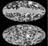
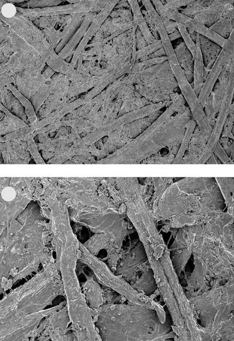
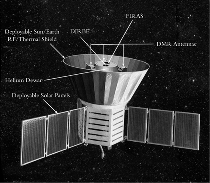

Chapter 5
THE PARADIGM SHIFT
You see, wire telegraph is a kind of a very, very long cat. You pull his tail in New York and his head is meowing in Los Angeles. Do you understand this? And radio operates exactly the same way: you send signals here, they receive them there. The only difference is that there is no cat.
ALBERT EINSTEIN
The most exciting phrase to hear in science, the one that heralds new discoveries, is not ‘Eureka!’ (I found it) but ‘That’s funny…’
ISAAC ASIMOV
In general we look for a new law by the following process. First you guess. Don’t laugh, this is the most important step. Then you compute the consequences. Compare the consequences to experience. If it disagrees with experience, the guess is wrong. In that simple statement is the key to science. It doesn’t matter how beautiful your guess is or how smart you are or what your name is. If it disagrees with experience, it’s wrong. That’s all there is to it.
RICHARD FEYNMAN

There were now two dominant theories fighting for control of the universe. In one corner was the Big Bang model, which had evolved out of Einstein’s theory of general relativity, thanks to Lemaître and Friedmann. It proposed a unique moment of creation followed by a rapid expansion, and sure enough Hubble had observed that the universe was expanding and the galaxies were receding. Also, Gamow and Alpher had shown that the Big Bang could explain the abundances of hydrogen and helium. In the other corner was the Steady State model, invented by Hoyle, Gold and Bondi, which harked back to the conservative view of an eternal universe, except that it included an element of continuous creation and expansion. This creation and expansion made the model compatible with all the astronomical observations, including Hubble’s observed redshifts from the receding galaxies.
Scientific debates over the strengths of competing theories usually take place in university coffee-rooms or at the elite conferences where great minds convene. However, when it came to the question of whether the universe was eternal or created—the ultimate cosmological question—the discussion spilled over into the public arena, partly encouraged by the various popular books and radio broadcasts by Hoyle, Gamow and other cosmologists.
Not surprisingly, the Catholic Church was keen to make known its view on the cosmological debate. Pope Pius XII, who had already proclaimed that evolutionary biology was not in conflict with the Church’s teaching, appeared at the Pontifical Academy of Sciences on 22 November 1951 to deliver an address entitled ‘The Proofs for the Existence of God in the Light of Modern Natural Science’. In particular, the Pope strongly endorsed the Big Bang model, which he perceived as a scientific interpretation of Genesis and evidence for the existence of God:
Thus everything seems to indicate that the material universe had a mighty beginning in time, endowed as it was with vast reserves of energy, in virtue of which, at first rapidly and then ever more slowly, it evolved into its present state…In fact, it would seem that present-day science, with one sweeping step back across millions of centuries, has succeeded in bearing witness to that primordial Fiat lux uttered at the moment when, along with matter, there burst forth from nothing a sea of light and radiation, while the particles of chemical elements split and formed into millions of galaxies…Therefore, there is a Creator. Therefore, God exists! Although it is neither explicit nor complete, this is the reply we were awaiting from science, and which the present human generation is awaiting from it.
The Pope’s address, which also included a specific mention of Hubble and his observations, made headlines in newspapers around the world. One of Hubble’s friends, Elmer Davis, read the address and could not resist writing to Hubble and joking: ‘I am used to seeing you earn new and ever higher distinctions; but till I read this morning’s paper I had not dreamed that the Pope would have to fall back on you for proof of the existence of God. This ought to qualify you, in due course, for sainthood.’
Surprisingly, the atheist George Gamow enjoyed the Papal attention given to his field of research. He wrote to Pius XII after the address, sending him a popular article on cosmology and a copy of his book The Creation of the Universe. He even went as far as mischievously quoting the Pope in a research paper he published in 1952 in the prestigious journal Physical Review, knowing full well that this would annoy many of his colleagues, who were anxious to avoid any overlap between science and religion.
The overwhelming majority of scientists felt strongly that deciding the validity of the Big Bang model had nothing whatsoever to do with the Pope and that his endorsement should not be used in any serious scientific debate. In fact, it was not long before the Papal endorsement backfired and became an embarrassment for the Big Bang proponents. Supporters of the rival Steady State model began to use the Papal address as a way of mocking the Big Bang. The British physicist William Bonner, for example, suggested that the Big Bang theory was part of a conspiracy aimed at shoring up Christianity: ‘The underlying motive is, of course, to bring in God as creator. It seems like the opportunity Christian theology has been waiting for ever since science began to depose religion from the minds of rational men in the seventeenth century.’
Fred Hoyle was equally scathing when it came to the Big Bang’s association with religion, condemning it as a model built on Judeo-Christian foundations. His views were shared by his Steady State collaborator, Thomas Gold. When Gold heard that Pius XII had backed the Big Bang, his response was short and to the point: ‘Well, the Pope also endorsed the stationary Earth.’
Scientists had been wary of the Vatican’s attempts to influence the course of science ever since Urban VIII had forced Galileo to recant in 1633. However, this wariness sometimes bordered on paranoia, as noted by the English Nobel Laureate George Thomson: ‘Probably every physicist would believe in a creation if the Bible had not unfortunately said something about it many years ago and made it seem old-fashioned.’
Perhaps the most important voice in the debate over the role of theology in cosmology was Monsignor Georges Lemaître, co-inventor of the Big Bang model and a member of the Pontifical Academy of Sciences. It was Lemaître’s firm belief that scientific endeavour should stand isolated from the religious realm. With specific regard to his Big Bang theory, he commented: ‘As far as I can see, such a theory remains entirely outside any metaphysical or religious question.’ Lemaître had always been careful to keep his parallel careers in cosmology and theology on separate tracks, in the belief that one led him to a clearer comprehension of the material world, while the other led to a greater understanding of the spiritual realm: ‘To search thoroughly for the truth involves a searching of souls as well as of spectra.’ Not surprisingly, he was frustrated and annoyed by the Pope’s deliberate mixing of theology and cosmology. One student who saw Lemaître upon his return from hearing the Pope’s address to the Academy recalled him ‘storming into class…his usual jocularity entirely missing’.
Lemaître was determined to discourage the Pope from making proclamations about cosmology, partly to halt the embarrassment that was being caused to supporters of the Big Bang, but also to avoid any potential difficulties for the Church. If the Pope—caught up as he was by his enthusiasm for the Big Bang model—were to endorse the scientific method and utilise it to support the Catholic Church, then this policy might rebound if new scientific discoveries contradicted Biblical teachings. Lemaître contacted Daniel O’Connell, director of the Vatican Observatory and the Pope’s science advisor, and suggested that together they try to persuade the Pope to keep quiet on cosmology. The Pope was surprisingly compliant and agreed to the request—the Big Bang would no longer be a matter suitable for Papal addresses.
While cosmologists in the West were beginning to have some success in divorcing themselves from religious influence, those in the East were still having to deal with non-scientists trying to influence the scientific debate. In the Soviet Union, the influence was not theological but political, and it was not pro-Big-Bang but anti-Big-Bang. Soviet ideologues were antagonistic towards the Big Bang model because it failed to comply with the tenets of Marxist-Leninist ideology. In particular, they could not accept any model that posited a moment of creation, because creation was synonymous with a Creator. Also, they perceived the Big Bang as a Western theory, even though it was Alexander Friedmann in St Petersburg who had laid its foundations.
Andrei Zhdanov, who helped to coordinate the Stalinist purges of the 1930s and 1940s, encapsulated the Soviet position on the Big Bang: ‘Falsifiers of science want to revive the fairy tale of the origin of the world from nothing.’ He sought out and persecuted those he called ‘Lemaître’s agents’. His victims included the astrophysicist Nikolai Kozyrev, who was sent to a labour camp in 1937 and sentenced to be executed for continuing to discuss his belief in the Big Bang model. Fortunately his death sentence was commuted to ten years’ incarceration when officials were unable to drum up a firing squad. After appeals by his colleagues, Kozyrev was eventually released and allowed to return to work at the Pulkovo Observatory.
Vsevolod Frederiks and Matvei Bronstein, who were also supporters of the Big Bang model, received the harshest punishments of all. Frederiks was imprisoned in a series of camps and died after six years of hard labour, while Bronstein was shot after being arrested on trumped-up charges of being a spy. By making examples of these and other scientists, the Soviets effectively gagged serious cosmological research and delivered a message that echoed on through the decades of Communism. The Russian astronomer V.E. Lov followed the party line by stating that the Big Bang model is a ‘cancerous tumour that corrodes modern astronomical theory and is the main ideological enemy of materialist science’. And Boris Vorontsov-Vel’iaminov, one of Lov’s colleagues, maintained solidarity by calling Gamow an ‘Americanised apostate’ because of his defection to the West, stating that he ‘advances new theories only for the sake of sensation’.
If the Big Bang theory was considered bourgeois science, then the Steady State theory hardly fared any better in the great scheme of communist ideology, because it too involved creation, albeit on a more gradual and continual basis. In 1958 Fred Hoyle attended a meeting of the International Astronomical Union in Moscow and recorded his reaction to the political undercurrent that dominated Soviet science: ‘Judge my astonishment on my first visit to the Soviet Union when I was told in all seriousness by Russian scientists that my ideas would have been more acceptable in Russia if a different form of words had been used. The words “origin” or “matter-forming” would be OK, but creation in the Soviet Union was definitely out.’
The fact that politicians and theologians alike were using cosmology to shore up their beliefs struck Hoyle as ridiculous. As he wrote in 1956:‘Both Catholics and Communists argue by dogma. An argument is judged “right” by these people because they judge it to be based on “right” premises, not because it leads to results that accord with the facts. Indeed, if the facts should disagree with the dogma then so much worse for the facts.’
But regardless of the Pope’s point of view or the Kremlin’s stance, how did the cosmologists line up in the Big Bang versus Steady State debate? Throughout the 1950s, the scientific community was divided. In 1959 the Science News-Letter conducted a survey and asked thirty-three prominent astronomers to declare their position. The results showed that eleven experts backed the Big Bang model, eight stood by the Steady State model, and the remaining fourteen were either undecided or thought that both models were wrong. Both models had established themselves as serious contenders for representing the reality of the universe, but neither had yet won a majority of support among scientists.
The reason for the lack of consensus was that the evidence for and against both models was inconclusive and contradictory. Astronomers were making observations that were at the very limit of their technology and understanding, so the ‘facts’ deduced from these observations had to be treated with a high degree of caution. For example, each measurement of a galaxy’s recessional velocity might be called a fact, but it was open to criticism because of the convoluted chain of logic and observation that underpinned it. First, measuring the recessional velocity relied on detecting faint rays of galactic light and making assumptions about how they were or were not affected during their passage through the intervening space and the Earth’s atmosphere. Second, the wavelengths of the light had to be measured and the galactic atoms that had emitted the light identified. Third, it was necessary to determine the spectral shift and then relate this shift to a recessional velocity via the cosmological Doppler effect. Finally, astronomers had to take into account the errors inherent in all the equipment and processes used, such as the telescope, the spectroscope, the photographic plate and even the developing process. This was a highly intricate set of connections, so astronomers had to be absolutely confident of every single step. Actually, measuring galactic recessional velocities was one of the more certain facts within cosmology; the chain of logic in other areas of the subject was even more convoluted and more open to criticism.
In the absence of conclusive evidence for or against either the Big Bang or the Steady State, many scientists based their cosmological preference on gut instinct or on the personalities of those who championed the rival models. This was certainly the case for Dennis Sciama, who would become one of the foremost cosmologists of the twentieth century, and whose supervision would inspire Stephen Hawking, Roger Penrose and Martin Rees. Sciama himself had been inspired by Hoyle, Gold and Bondi, whom he called ‘an exciting influence for a younger person like myself.‘
Sciama also found himself drawn to various philosophical aspects of their theory: ‘The Steady State theory opens up the exciting possibility that the laws of physics may indeed determine the contents of the universe through the requirement that all features of the universe be self-propagating…The requirement of self-propagation is thus a powerful new principle with whose aid we see for the first time the possibility of answering the question why things are as they are without merely saying: it is because they were as they were.’
And he would later find another reason for preferring the Steady State over the Big Bang: ‘It’s the only model in which it seems evident that life will continue somewhere…even if the galaxy ages and dies out, there will always be new, young galaxies where life will presumably develop. And therefore the torch keeps being carried forward. I think that was probably the most important item for me.’
Sciama’s largely subjective reasons for opting for the Steady State model were symptomatic of the uncertainty and tumult within cosmology. At the start of the twentieth century, cosmology was a comfortable subject with a well-established view of an eternal, unchanging, static universe, but measurements and new theories in the 1920s showed that this position was clearly unsatisfactory. Unfortunately, neither of the two emerging alternatives was entirely convincing. The Steady State cosmology was a revised version of the original eternal, static world-view, but there was little observational evidence to either support it or undermine it. The Big Bang cosmology was a more radical and catastrophic view of the universe, with some evidence in its favour and some against. In short, cosmology was in limbo. Or, more technically, cosmology was in the middle of a paradigm shift.
The traditional view of the history of science was that scientific understanding developed gradually through a series of minor changes, with established theories being refined over the decades and new theories emerging from old ones. This was science developing by Darwinian evolution and natural selection. Theories mutated, and then it was a case of survival of the fittest, in the sense that the theory that best fitted observation would be adopted.
However, the philosopher of science Thomas S. Kuhn felt that this was only part of the story. In 1962 he wrote The Structure of Scientific Revolutions, in which he described scientific progress as a ‘series of peaceful interludes punctuated by intellectually violent revolutions’. The peaceful interludes were periods during which theories would gradually evolve as described already, but every so often there would need to be a major shift in thinking, known as a paradigm shift.
For example, astronomers had for centuries tinkered with the paradigm of an Earth-centred model of the universe, adding epicycles and deferents to make the model a better fit to the observed paths of the Sun, stars and planets. Gradually there arose a series of problems to do with predicting planetary orbits, which most astronomers ignored through natural conservatism and ingrained respect for the existing paradigm. Eventually, when the problems had mounted and reached an intolerable level, rebels such as Copernicus, Kepler and Galileo offered a new Sun-centred paradigm. Within a couple of generations, the entire community of astronomers abandoned the old paradigm and shifted to the new one. Thereafter, a new era of scientific stability began, with a fresh programme of research built on new foundations and a new paradigm. The Earth-centred model did not evolve into the Sun-centred model, rather it was replaced by it.
The shift from the plum pudding atomic model to Rutherford’s nuclear atomic model is another example of a paradigm shift, as is the shift from an ether-filled universe to one devoid of any ether. In each case, the shift from one paradigm to another could happen only once the new paradigm was properly fleshed out and the old paradigm had been fully discredited. The speed of the transition depends on numerous factors, including the weight of evidence in favour of the new paradigm and the extent to which the old guard resists change. Older scientists, having invested so much time and effort in the old paradigm, are generally the last to accept the change, whereas younger scientists are generally more adventurous and open-minded. The paradigm shift might therefore be completed only when the older generation has retired from scientific life, and the younger generation has become the new establishment. The old paradigm might have prevailed for centuries, so a transition period that lasts a couple of decades is still comparatively short.
The situation in cosmology was slightly unusual, inasmuch as the old paradigm of a static, eternal universe had already been discredited (because the galaxies were clearly not static) and there were two new paradigms vying for superiority, the Steady State and Big Bang models. Cosmologists hoped that this period of uncertainty and conflict would be ended by finding indisputable evidence that would prove which one of the two new models was correct.
In order to resolve whether we lived in the aftermath of a Big Bang or in the middle of a Steady State, astronomers would have to focus on a series of key criteria that were critical to the two competing models. These are summarised in Table 4, in which each criterion is briefly evaluated to indicate which model was more successful according to the data available in 1950.
While this table does not include every potential criterion for distinguishing between the two models, it does contain the main ones, such as each model’s ability to explain the abundances of the various elements. Judged against this second criterion, the Big Bang model could accurately explain the abundances of hydrogen and helium in the universe, but not the abundances of heavier atoms. The Big Bang model earns a question mark on this point because of its partial success. The Steady State model also warrants a question mark here because it was unclear how the matter created in between the receding galaxies developed into the atomic abundances that we observe.
Not only did the two models have to explain the formation and abundances of the various atoms, they also had to explain how these atoms gathered together to form stars and galaxies, the third criterion in the table. This issue, which has not been discussed in any detail in previous chapters, posed a major problem for the Big Bang model. The universe would have expanded rapidly after the moment of creation, which would have tended to pull apart any baby galaxies that were trying to form. Also, because a Big Bang universe has only a finite history, there would have been only a billion or so years for the galaxies to evolve—a relatively short timescale. In other words, nobody could explain how the galaxies formed in the context of the Big Bang model. The Steady State theory was more confident on this issue, because in an eternal universe there would be more time for galaxies to develop.
The two columns that reflect the specific successes and failures of the two rival models contain a mixture of ticks, crosses and question marks, neither theory being completely satisfactory. One can therefore imagine cosmologists settling their differences by accepting that the Big Bang model could explain some features of the universe and the Steady State model could explain the others. However, cosmology is not a sport in which competing models can share the glory. The Big Bang and Steady State models were contradictory and incompatible at a fundamental level. One model claimed that the universe was eternal, while the other claimed that the universe was created, and they could not both be correct. Assuming that one of the two models was correct, then whichever model would be victorious ultimately would have to crush its rival.
This table lists various criteria against which the Big Bang and Steady State models could be judged. It shows how the two models fared on the basis of data available in 1950. The ticks and crosses give a crude indication of how well each model fared in relation to each criterion, and a question mark indicates a lack of data or a mixture of agreement and disagreement. Criteria 4 and 5 warrant question marks because of a lack of observations.
| Criterion | Big Bang Model | Success |
| 1. Redshift and the expanding universe | Expected from a universe that is created in a dense state and then expands | |
| 2. Abundances of the atoms | Gamow and colleagues showed that the Big Bang predicts the observed ratio of hydrogen to helium, but fails to explain the other atomic abundances |
|
| 3. Formation of galaxies | The Big Bang expansion would perhaps have pulled apart baby galaxies before they could grow; nevertheless, galaxies did evolve, but nobody could explain how |
|
| 4. Distribution of galaxies | Young galaxies existed in the early universe and should therefore be observable only at great distances, which effectively provides a window onto the early universe |
|
| 5. Cosmic microwave background (CMB) radiation | This echo of the Big Bang should still be detectable with sufficiently sensitive equipment |
|
| 6. Age of the universe | The universe is apparently younger than the stars it contains |
|
| 7. Creation | There is no explanation of what caused the creation of the universe |
|
| Criterion | Steady State Model | Success |
| 1. Redshift and the expanding universe | Expected from an eternal universe that expands, with new matter being created in the gaps | |
| 2. Abundances of the atoms | Matter is created in between the galaxies moving apart, so somehow this material has to be transformed into the atomic abundances that we observe |
|
| 3. Formation of galaxies | There is more time and no initial violent expansion; this allows galaxies to develop and die, to be replaced by new galaxies built from created matter | |
| 4. Distribution of galaxies | Young galaxies should appear to be evenly distributed, because they can be born anywhere and at any time out of the matter created in between old galaxies |
|
| 5. Cosmic microwave background (CMB) radiation | There was no Big Bang so there was no echo, which is why we cannot detect it |
|
| 6. Age of the universe | The universe is eternal, so the age of the stars is not a difficulty | |
| 7. Creation | There is no explanation of the continuous creation of matter in the universe |
|
The Timescale Difficulty
The most pressing problem for the Big Bang supporters was the sixth criterion in Table 4—the age of the universe. The cross highlights an absurdity in the Big Bang model: it implied a universe that was younger than the stars within it. This is as ridiculous as a mother being younger than her daughter—surely the stars could not be older than the universe itself? Chapter 3 described how Hubble had measured the distance to the galaxies and their apparent velocity; Big Bang cosmologists had then divided the distance by the velocity to deduce that roughly 1.8 billion years ago the entire mass of the universe had been concentrated into a single point of creation. But measurements of radioactive rocks had shown that the Earth was at least 3 billion years old, and it was logical to assume that the stars were even older.
Even Einstein, who supported the Big Bang, admitted that this problem would demolish the model, unless someone could find a drastic solution: ‘The age of the universe…must certainly exceed that of the firm crust of the Earth as found from the radioactive minerals. Since determination of age by these minerals is reliable in every respect, the [Big Bang model] would be disproved if it were found to contradict any such results. In this case I see no reasonable solution.’
The age discrepancy became known as the timescale difficulty, a phrase that did not truly reflect the huge embarrassment it caused the Big Bang model. The only real prospect for resolving the age paradox was for an error to be discovered in previous measurements of either the distances to the galaxies or their velocities. For example, if the distances to the galaxies were greater than Hubble’s estimates, then it would have taken the galaxies longer to reach their current distances, which would mean an older universe. Alternatively, if the speeds of recession of the galaxies were slower than Hubble’s estimates, then again it would have taken the galaxies longer to reach their current distances, which again would mean an older universe. Hubble, though, was the most highly respected observational astronomer in the world, famous for his precision and diligence, so nobody seriously doubted the accuracy of his observations. Furthermore, his measurements had been independently checked by others.
When America entered the Second World War, observational astronomy and the activities of the major observatories largely ground to a halt. Any plans to try to resolve the Big Bang versus Steady State debate were postponed as astronomers dedicated themselves to serving their country. Even Hubble, who was in his fifties, left Mount Wilson to become head of ballistics at the Aberdeen Proving Ground, Maryland, the highest civilian post outside Washington, DC.
The only senior figure to remain at Mount Wilson was Walter Baade, a German émigré who had joined the observatory’s staff in 1931. Despite a decade of living and working in America, he was still under suspicion and was forbidden to join any military research group. From Baade’s point of view, the situation was quite satisfactory because it looked as though he would have sole use of the prestigious 100-inch Hooker Telescope. Moreover, wartime blackouts stopped the annoying light pollution from the Los Angeles suburbs, improving viewing conditions to a level unknown since the telescope was built in 1917. The only problem was that Baade’s enemy alien status meant that he was confined to his house from sundown to sunrise, which was not ideal for an astronomer. Baade pointed out to the authorities that he was already in the process of applying for American naturalisation and eventually convinced them that he was not a security risk. He was still blocked from conducting military research, but within a few months his curfew was lifted and Baade had complete control of the world’s best telescope under ideal viewing conditions. He also made the most of the increasingly sensitive photographic plates that were becoming available, creating images of unparalleled sharpness.
Baade spent the war years studying a particular type of star known as an RR Lyrae star, a type of variable star similar to a Cepheid variable star. Williamina Fleming, who worked alongside Henrietta Leavitt at the Harvard Observatory, had shown that the variability of RR Lyrae stars could be used, like Cepheids, to measure distances. So far her technique had been used only within the Milky Way, because RR Lyrae stars are less luminous than Cepheids. However, Baade’s ambition was to use the ideal viewing conditions to find RR Lyrae stars in the Andromeda Galaxy, our nearest large galaxy. In this way he could use the variability of RR Lyrae stars to measure the distance to Andromeda and cross-check earlier distance measurements based on Cepheid variables.
In fact, Baade soon realised that the RR Lyrae stars in Andromeda were beyond the reach of the 100-inch Hooker Telescope, so he had to satisfy himself with using the 100-inch instrument to do background work on these stars in the Milky Way in preparation for observations to be made with the 200-inch telescope, which would be completed as soon as the war was over. He was optimistic that the new giant telescope would bring Andromeda’s RR Lyrae stars clearly into view.
The 200-inch telescope, George Hale’s greatest astronomical engineering project, was being constructed on Mount Palomar, 200 kilometres south-east of Mount Wilson. Hale died in 1938, just two years after building started, so he never got to see what would be the most spectacular view of the universe ever achieved. When the instrument was eventually completed, it was named the Hale Telescope in his honour.
On 3 June 1948 the Los Angeles glitterati attended the telescope’s inauguration. They marvelled at the 1,000-tonne revolving dome that housed the giant instrument, its concave mirror polished to an accuracy of fifty millionths of a millimetre. When Charles Laughton, star of Mutiny on the Bounty, was asked if the Hale Telescope was inspiring, he replied: ‘Inspiring, my eye! It’s damned frightening. What are they going to do with it? Start a war with Mars?’
By the time the Hale Telescope was fully operational, both Mount Wilson and Mount Palomar had a full complement of research staff. Nevertheless, Baade still had a head start in the search for RR Lyrae stars in the Andromeda Galaxy, thanks to his hard work during the Second World War when he had the 100-inch telescope to himself. He immediately aimed the new 200-inch telescope at the Andromeda Galaxy and scanned it for faint stars with a rapid variation in brightness, which would be indicative of RR Lyrae stars.
After a month of meticulous surveying, Baade found absolutely no sign of the RR Lyrae stars that he had expected to see. He persevered, yet still could not find what should have been discernible with the powerful Hale Telescope. He was baffled. He knew that his ability to see the RR Lyrae stars in the Andromeda Galaxy depended on only three things—the brightness of the stars, the power of the 200-inch telescope and the distance to the galaxy—and his calculations showed that the stars should definitely be visible. Unsure of what was behind his failure to detect any RR Lyrae stars, he revisited the three factors that determined his ability to see: he was confident of the brightness of the RR Lyrae stars from his wartime research, and he was sure that he understood the power of his telescope…so was it possible that the distance to Andromeda was farther than everybody had assumed?
Baade convinced himself that an error in the accepted distance to the Andromeda Galaxy was the only logical and possible explanation. His colleagues were initially sceptical, but they were persuaded that Baade was right when he was able to pinpoint exactly how and why the Andromeda Galaxy had been previously mismeasured.
As explained in Chapter 3, the original measurement to the Andromeda Galaxy had been performed using Cepheid variable stars, which had become the basic yardstick for measuring intergalactic distances. Henrietta Leavitt had shown that Cepheids have the useful property that the time period between two peaks in brightness is an excellent indication of their inherent luminosity, which can be compared with their apparent luminosity to ascertain their distance from the Earth. Hubble had been the first to find Cepheids outside the Milky Way and thereby measure the distance to another galaxy, namely the Andromeda Galaxy.
However, by the 1940s it was becoming evident that most stars could be grouped into two broad types, called populations. Older stars belong to Population II, and after these stars have expired their debris becomes an ingredient of newer, younger, Population I stars, which are generally hotter, brighter and bluer than their counterparts in Population II. Baade assumed that Cepheids were also split into these two categories, and suggested that this was what lay behind the contradictions over the distance to the Andromeda Galaxy.
Baade’s argument that Andromeda was farther away was based on two simple steps. First, Population I Cepheids are intrinsically brighter than Population II Cepheids that have the same period of variation. And second, astronomers tended to see only the brighter Population I Cepheids in the Andromeda Galaxy, but they had inadvertently built their Cepheid distance scale by using the dimmer Population II Cepheids in the Milky Way.
Unaware that there were two types of Cepheid, Hubble had made the mistake of comparing dim, local Population II Cepheids with Andromeda’s relatively bright Population I Cepheids. The consequence was that he had erroneously estimated the Andromeda Galaxy to be closer than it really is.
To set matters straight, Baade set about assiduously recalibrating the Cepheid yardstick according to the two types of Cepheid. In this way he could properly estimate the distance to the Cepheids in the Andromeda Galaxy, and therefore the distance to Andromeda itself. He worked out that Population I Cepheids are on average four times as luminous as Population II Cepheids that have the same period of variation. Conveniently, if a star is moved twice as far away from an observer, then it appears to be four times fainter. Therefore the Andromeda Galaxy had to be moved twice as far away—to a distance of roughly 2 million light years – to compensate for the fact that the Population I Cepheids visible in Andromeda were, on average, four times brighter than the Population II Cepheids traditionally used for measuring distance. The distance to Andromeda had now been corrected. At a distance of 2 million light years, it was no longer a surprise that the RR Lyrae stars were too faint to be seen.
If adjusting the distance to the Andromeda Galaxy had been the only consequence of Baade’s work, it would not have merited a mention in this book. However, the distance to Andromeda had been used to estimate the distances to the other galaxies, using a method that will be discussed shortly. Hence, doubling the distance to Andromeda meant doubling the distances to all the other galaxies too.
Yet, the estimated recession speeds of these galaxies remained the same, as they were derived from spectroscopy and redshifts, which were unaffected by Baade’s research. This had a massive positive impact on the Big Bang model. If the distances doubled and the speeds remained the same, then the time taken for all the galaxies to have reached their current distances from a moment of creation would also have to be doubled. In other words, the age of the universe in the Big Bang model could now be revised upwards to 3.6 billion years, a figure that was no longer incompatible with the age of the Earth.
Critics of the Big Bang model pointed out that the stars and galaxies were older than the Earth and therefore probably more ancient than 3.6 billion years, which meant that the universe still seemed to contain objects that were older than the universe itself. So, these critics claimed that the so-called timescale difficulty was still a problem. But the Big Bang supporters were not rattled by this perfectly valid point, because Baade’s research had demonstrated that there was still a lot to learn about measuring galactic distances and the age of the universe. He had found one error and doubled the universe’s age, so it was quite possible that another error would be found, and perhaps the age would be doubled again.
Baade’s breakthrough had gone a long way towards fixing a major fault in the Big Bang model, but more importantly it had highlighted a weakness in astronomy more generally—the habit of blind obedience. Because of Hubble’s reputation, astronomers had for too long unhesitatingly accepted his proclamation on the distances to Andromeda and the other galaxies. A failure to question and challenge such fundamental statements, even when they are made by eminent authorities, is one of the key features of poor science.
Many years later, and inspired by the Andromeda distance blunder, the Canadian astronomer Donald Fernie would acerbically highlight the undesirable quality of compliance in science: ‘The definitive study of the herd instincts of astronomers has yet to be written, but there are times when we resemble nothing so much as a herd of antelope, heads down in tight formation, thundering with firm determination in a particular direction across the plain. At a given signal from the leader we whirl about, and, with equally firm determination, thunder off in a quite different direction, still in tight parallel formation.’
Baade formally announced that the universe was twice as old as previously believed when he attended the 1952 meeting of the International Astronomical Union in Rome. Those in the room who backed the Big Bang model immediately saw that this new measurement supported their belief in a moment of creation—or at least it removed a stumbling block. As luck would have it, the official recorder for that particular session was the Big Bang’s fiercest critic, Fred Hoyle. He dutifully noted the result, but his deeply held belief in an eternal universe obliged him to choose his words in such a way as to carefully avoid any reference to the Big Bang or creation. He wrote: ‘Hubble’s characteristic time scale for the Universe must now be increased from about 1.8 billion years to about 3.6 billion years.’
The only person more disappointed than Hoyle by the result was Edwin Hubble. His frustration had nothing to do with whether or not the Big Bang was true, for he had never bothered himself with such cosmological questions. Hubble cared only about the accuracy of his measurements, not the interpretations and theories that were based upon them. Consequently, he was devastated because Baade had found a major flaw in his distance measurements.
As Hubble took on board the significance of Baade’s new measurements, he felt a twinge of bitterness. Despite the numerous national and international prizes and awards he had won, he always regretted that he had never been honoured with a Nobel prize, which had always been his ultimate goal. Now that Baade had highlighted an error in his work, it seemed as though a Nobel prize would remain out of his reach.
In fact, the Nobel physics committee had no doubt that Hubble was the greatest astronomer of his generation, and Baade’s research had hardly tarnished the great man’s reputation in their eyes. After all, Hubble had settled the Great Debate in 1923 by proving the existence of galaxies beyond the Milky Way, and he had laid the foundation for the Big Bang versus Steady State debate with his law of galactic redshifts in 1929. The only reason why the Nobel Foundation had ignored him was that they had never considered astronomy to be part of physics. Hubble had lost out on a technicality.
Hubble had to be satisfied with the acclaim he received from the press and the public, who adored their cosmic hero and who rightly praised his achievements. As one journalist put it: ‘While Columbus sailed three thousand miles and discovered one continent and some islands, Hubble has roved through infinite space and discovered hundreds of vast new worlds, islands, sub-continents, and constellations not just a few thousand miles away, but trillions of miles out yonder.’
Hubble died of a cerebral thrombosis on 28 September 1953. Tragically, he was completely unaware that the Nobel physics committee had secretly decided to change their rules and recognise his achievements with a Nobel prize. In fact, the committee was preparing to make the announcement of his nomination when Hubble passed away.
The prize cannot be awarded posthumously, and protocol dictated that committee discussions should remain confidential. Hubble’s nomination would thus have been a secret for ever had it not been for two committee members, Enrico Fermi and Subrahmanyan Chandrasekhar, who decided to contact Grace Hubble. They were anxious to let Grace know that her husband’s unparalleled contribution to our understanding of the universe had not been overlooked.
Dimmer, Further, Older
By challenging and then correcting the accepted distance to the Andromeda Galaxy, Walter Baade was reminding his colleagues that past measurements should be challenged and reviewed, and discarded if found wanting. This was an essential part of a healthy scientific climate. Only when a measurement had been checked, double-checked, triple-checked and cross-checked might it just about earn the title of ‘fact’; even then, the occasional rebellious remeasurement would never do any harm.
This culture of doubt and criticism was even applied to Baade’s distance measurements. In fact, it was Baade’s own student, Allan Sandage, who would revise his master’s measurements, thereby increasing the age of the universe again.
Sandage, like so many of his colleagues, had been hooked on astronomy ever since he had first peered through the eyepiece of a telescope. He never forgot that childhood moment when ‘a firestorm took place in my brain’. He went on to earn a doctoral position at the Mount Wilson Observatory, working alongside Baade, who asked him to take fresh images of the most distant galaxies that had been observed. Baade simply wanted Sandage to check that his distance estimates were correct.
Astronomers could not use the Cepheid yardstick technique for measuring the distance to the farthest galaxies because it had been impossible to detect Cepheid variable stars so far away. Instead, they were forced to adopt a completely different measuring technique, which relied on the reasonable assumption that the brightest star in the Andromeda Galaxy was intrinsically as bright as the brightest star in any other galaxy. Therefore, if the brightest star in a distant galaxy was apparently 1/100 (1/102) as bright as the brightest star in Andromeda, then the distant galaxy was assumed to be 10 times farther away, because brightness falls off with the square of the distance.
Although the brightness of stars varies enormously, this approach to measuring distance was not unreasonable. Human height, for example, also varies enormously. However, in a randomly selected group of fifty adults, it would be reasonable to assume that the height of the tallest person would be roughly 190 centimetres. So if there are two large groups of people in the distance and the tallest person in one group is apparently one-third the height of the tallest person in the other group, then it would be reasonable to guess that the first group is three times farther away than the second group. This is because the tallest person in both groups should be of roughly equal height, and apparent height falls away in proportion with distance. This method is not perfect, as one group might be on their way to a basketball tournament, and the other might be going to a demonstration to campaign for more rights for jockeys. In most cases, however, the distance estimation should be accurate to within a few per cent.
The technique would be even more accurate if one assessed the average height of people or the average brightness of stars, but astronomers were studying such distant objects that they were forced to apply the technique to the brightest star in each galaxy, which they were more likely to be able to see. Astronomers had used this technique for measuring distances to galaxies since the 1940s and were confident that it was basically reliable, although they were prepared to accept that distances might occasionally need to be tweaked, which is why Baade had asked Sandage to check his estimates. In fact, Sandage would reveal that the brightest-star approach had been plagued by a fundamental flaw.
Thanks to improved photography, Sandage could see that what had been repeatedly perceived as the brightest star in a distant galaxy was in fact something else altogether. Much of the hydrogen in the universe has coalesced into familiar compact stars, but there is also a significant amount of it in the form of vast clouds known as HII regions. An HII region absorbs light from surrounding stars, which heats it to over 10,000°C. Because of its temperature and size, an HII region can outshine almost any star.
Before Sandage, astronomers had been accidentally and incorrectly comparing the brightest star visible in the Andromeda Galaxy with the brightest HII region in more distant, newly discovered galaxies. Thinking that the HII regions were stars, astronomers had assumed that these new galaxies were relatively close because their brightest ‘stars’ appeared to be comparatively bright. When Sandage obtained images that were sharp enough to distinguish these HII regions from genuine stars, he concluded that the brightest genuine stars in distant galaxies were actually much fainter than the misinterpreted HII regions, so the galaxies had to be farther away than previously estimated.
The distances to these far-off galaxies were absolutely critical in terms of estimating the age of the universe according to the Big Bang model. In 1952 Baade had doubled galactic distances, and in so doing he had doubled the age of the universe to 3.6 billion years. Then, two years later, Sandage pushed back the galaxies even farther, increasing the age of the universe to 5.5 billion years.
Despite these increases, the measurements were still underestimated. Sandage continued working on his distance measurements throughout the 1950s, and both the distances and resulting age continued to grow. Indeed, Sandage would become the dominant figure in measuring distances and the age of the universe, and largely thanks to his observations it eventually became clear that the universe was between 10 and 20 billion years old. This broad range was certainly compatible with other objects in the universe. No longer could the Steady Staters mock the Big Bangers for positing a universe that was younger than the stars contained within it.
Figure 88 This group photograph from the 1958 Solvay Conference shows Allan Sandage and Walter Baade, whose revised distance measurements to the galaxies increased the age of the universe in the context of the Big Bang model. Many of the main figures in the Big Bang versus Steady State debate are pictured here, including Hoyle, Gold, Bondi and Lemaître.
Despite the bitter academic rivalry, there were some personal friendships between the two camps. For instance, Hoyle was very fond of Lemaître, whom he described as ‘a round, solid man, full of jokes and laughter’. Hoyle affectionately recalled a car trip they made across Italy after a conference in Rome: ‘Only in one respect did Georges’s presence raise an issue, and this was over lunch. I always wanted a light lunch, so that I could continue driving in the afternoon, whereas Georges wanted a heavy lunch with a bottle of wine, so that he could sleep in the afternoon.We compromised by allowing Georges to sleep in the back of the car, which, unfortunately, led to his awakening almost always with a shocking headache.’
Cosmic Alchemy
Although the timescale difficulty had now been resolved, the Big Bang model still suffered from other problems. The foremost puzzle concerned nucleosynthesis, specifically the creation of the heavier elements. George Gamow had once boasted: ‘The elements were cooked in less time than it takes to cook a dish of duck and roast potatoes.’ In short, he believed that all the various atomic nuclei were created in the hour immediately following the Big Bang. However, despite the best efforts of Gamow, Alpher and Herman, it had been impossible to find a mechanism that would create anything but the lightest atoms, such as hydrogen and helium, even though the aftermath of the Big Bang was a period of intense heat. If the heavier elements were not created in the moments immediately after the Big Bang, then the problem was clear: where and when were they created?
Arthur Eddington had already put forward one possible theory about nucleosynthesis: ‘I think the stars are the crucibles in which lighter atoms are compounded into more complex elements.’ However, the temperature of stars was estimated to be just a few thousand degrees at the surface and just a few million degrees at the core. This temperature was certainly sufficient to turn hydrogen into helium slowly, but was wholly inadequate for fusing these helium nuclei into truly heavy nuclei, which required a temperature of a few billion degrees.
For example, creating neon atoms would require a temperature of 3 billion degrees, and creating heavier silicon atoms would require an even higher temperature of 13 billion degrees. And this leads to another problem. If there was an environment capable of creating neon, then it would not be hot enough to create silicon. Alternatively, if it was hot enough to create silicon, then all the neon would be converted into something heavier. It seemed as though every type of atom needed its own tailor-made crucible of creation, and that the universe would have to house a vast array of intense environments. Alas, nobody could work out where, or even if, these crucibles existed.
It was Fred Hoyle who would contribute most to solving this mystery. He did not see the problem of nucleosynthesis as a Big Bang versus Steady State issue, but rather as a matter of concern for both theories. The Big Bang model somehow had to explain how the fundamental particles at the start of the universe had been transformed into heavier atoms of varying abundances. Similarly, the Steady State model had to explain how the particles being continually created in between the receding galaxies were converted into heavier atoms. Hoyle had been thinking about the problem of nucleosynthesis ever since he was a junior researcher, but he did not take his first tentative steps towards a solution until the late 1940s. He began to make progress when he speculated about what would happen to a star as it passed through the various phases of its life.
A middle-aged star is generally stable, generating heat by fusing hydrogen into helium and losing heat by radiating light energy. At the same time, all of the mass of the star is being pulled inwards by its own gravitational attraction, but this is counteracted by the huge outward pressure caused by the high temperatures at the core of the star. As discussed in Chapter 3, this stellar equilibrium is similar to the balance of forces acting on a balloon, where the stretched rubber skin is trying to collapse the balloon inwards, and the air inside the balloon exerts a pressure that is pushing outwards. This analogy was used to explain why Cepheid stars are variable.
Hoyle was very familiar with the theoretical research that had been done on stars and the balance between the threat of gravitational collapse and the resistance of outward pressure, but he wanted to see what would happen when this balance was disrupted. In particular, Hoyle wanted to understand what would happen towards the end of a star’s life, when it began to run out of hydrogen fuel. Not surprisingly, the fuel shortage would cause the star to begin to cool down. The fall in temperature would result in a fall in outward pressure, and the gravitational force would become overpowering and would initiate a stellar contraction. Crucially, however, Hoyle realised that this contraction was not the end of the story.
As the entire star falls inwards, the compression would cause the stellar core to heat up and generate an increased outward pressure, which would halt the collapse. The temperature rise associated with compression has several causes, but one of them is that compression encourages more nuclear reactions, resulting in the generation of more heat.
Although this extra heat re-establishes some level of stability in the star, it is only a temporary hiatus; the star’s death has only been deferred. The star continues to consume more fuel, and eventually its dwindling fuel supply becomes critical. Lack of fuel means lack of energy production, so the core begins to cool again, which leads to another collapsing phase. Again, this heats the core, again halting the collapse until the next fuel shortage. This stop—start collapse means that many stars endure a slow, lingering death.
Hoyle set about analysing the various types of star (e.g. small, medium, large, Population I, Population II), and after several years of dedicated research he successfully completed his calculations of all the temperature and pressure changes that happened in different stars as they neared the end of their lives. Most importantly of all, he also worked out the nuclear reactions in each death spasm, and crucially showed how the various combinations of extreme temperatures and pressures could lead to a whole range of medium-weight and heavyweight atomic nuclei, as shown in Table 5.
Table 5
Fred Hoyle calculated the conditions in different stars at different stages of their life to see how nucleosynthesis might occur. This table shows the nucleosynthesis reactions that take place in a star with roughly twenty-five times the mass of our Sun. Such a heavy star has a remarkably short lifetime compared with typical stars. Initially the star spends several million years fusing hydrogen into helium. The temperature and pressure increase during the latter phases of its life, and allows for the nucleosynthesis of oxygen, magnesium, silicon, iron and other elements. A variety of even heavier atoms are generated during the final and most intense stages.
It became apparent that each type of star could act as a crucible for creating several different elements because stellar interiors changed dramatically during the course of a star’s life and death. Hoyle’s calculations could even account for the exact abundances of almost all the elements that we see today, explaining why oxygen and iron are common, while gold and platinum are rare.
In exceptional cases, the early collapsing phase of a very massive star becomes unstoppable and the star dies quite rapidly. This is a supernova, the most violent example of stellar death, which causes an implosion of unparalleled intensity. When it goes supernova, a single star can release enough energy to outshine more than 10 billion ordinary stars (which is why a supernova had confused astronomers involved in the Great Debate, as discussed earlier in Chapter 3). Hoyle showed that supernovae create the most extreme stellar environments and thus allow rare nuclear reactions to take place, thereby manufacturing the heaviest and most exotic atomic nuclei.
One of the most important outcomes of Hoyle’s research was that the death of a star did not mark the end of the nucleosynthesis process. As a star implodes it sends out massive shock waves, which leads to an explosion, sending atoms flying out across the universe. Importantly, some of these atoms are the products of the nuclear reactions that took place in the final phases of the star’s life. This stellar debris mixes with whatever else might be floating in the cosmos, including the atoms from other dead stars, eventually condensing to form completely new stars. These second-generation stars have a head start in terms of nucleosynthesis because they already contain some heavier atoms. This means that when they in turn die and implode they will build even heavier atoms. It is thought that our own Sun is probably a third-generation star.
Marcus Chown, author of The Magic Furnace, described the significance of stellar alchemy as follows: ‘In order that we might live, stars in their billions, tens of billions, hundreds of billions even, have died. The iron in our blood, the calcium in our bones, the oxygen that fills our lungs each time we take a breath—all were cooked in the furnaces of the stars which expired long before the Earth was born.’ Romantics might like to think of themselves as being composed of Stardust. Cynics might prefer to think of themselves as nuclear waste.
Hoyle had tackled one of the greatest puzzles in cosmology, and found a solution that was almost complete, except that there was one outstanding problem. Table 5 shows the chain of nucleosynthesis in one particular type of star: hydrogen is converted into helium, then helium into carbon, then carbon into all the heavier elements.
Although the table explicitly shows the helium to carbon phase, Hoyle could not actually work out how this step happened. As far as he could see, there was no viable nuclear pathway for transforming helium into carbon. This was a major problem, because unless he could explain the formation of carbon, he could not explain how all the other nuclear reactions took place because they all required carbon at some point in the chain that led to their creation. And this was a problem for all types of star—there was simply no way of turning helium into carbon.
Hoyle had run into exactly the same nuclear brick wall that had halted the progress of Gamow, Alpher and Herman towards an explanation of how helium was converted into heavier elements in the early moments of the Big Bang. If you recall, Gamow’s team found that any nuclear reactions undergone by helium produced only unstable nuclei. Adding a hydrogen nucleus to a helium nucleus gave an unstable lithium-5 nucleus; merging two helium nuclei gave an unstable beryllium-8 nucleus. It seemed as though nature had conspired to block the only two paths that could turn helium nuclei into heavier nuclei, most notably carbon. Unless these two obstacles could be circumvented, the problem of building heavier nuclei would undermine the whole of Hoyle’s vision of stellar nucleosynthesis. His hopes of explaining the rich variety of elements would dissolve.
Gamow’s team could not solve this problem in the context of Big Bang nucleosynthesis, and Hoyle could not solve it in the context of stellar nucleosynthesis. Transforming helium into carbon seemed to be impossible. But Hoyle refused to give up hope of finding a viable pathway for carbon production. All the complex nuclear reactions he had predicted within dying stars relied on the existence of carbon, so he dedicated himself to solving the mystery of how the carbon itself was formed.
The most common form of carbon is known as carbon-12, because its nucleus contains twelve particles, namely six protons and six neutrons. The most common form of helium is known as helium-4, because its nucleus contains four particles, namely two protons and two neutrons. Hoyle’s problem could therefore be boiled down to one straightforward question: is there a viable mechanism for transforming three helium nuclei into a single carbon nucleus?
One possibility was for three helium nuclei to simultaneously collide and form a carbon nucleus. It was a nice idea, but impossible in practice. The chances of three helium nuclei being in exactly the same place at exactly the same time and travelling at exactly the right speeds to fuse together was effectively nil. The alternative pathway was for two helium nuclei to fuse to form a beryllium-8 nucleus, with four protons and four neutrons, and then for this beryllium-8 nucleus later to fuse with another helium nucleus to form carbon. This pathway and the three-way helium collision mechanism are illustrated in Figure 89.
However, beryllium-8 is very unstable, which is why it was already regarded by Gamow as a block on the path to building nuclei heavier than helium. In fact, a beryllium-8 nucleus is so unstable that (on the rare occasions on which one does form) it typically lasts for less than a millionth of a billionth of a second before spontaneously breaking up. It is just about conceivable that a helium nucleus might merge with a beryllium-8 nucleus during its fleeting existence to form carbon-12, but even if this did happen there was another hurdle to overcome.
The combined mass of a helium nucleus and a beryllium nucleus is very slightly greater than the mass of a carbon nucleus, so if helium and beryllium did fuse to form carbon then there would be the problem of getting rid of the excess mass. Normally, nuclear reactions can dissipate any excess mass by converting it into energy (via E = mc2), but the greater the mass difference, the longer the time required for the reaction to happen. And time is something that the beryllium-8 nucleus does not have. The formation of carbon has to happen almost instantaneously because beryllium-8 has such a short lifetime.
Figure 89 Diagram (a) illustrates a possible nuclear path from helium to carbon which requires three helium nuclei to collide simultaneously. This is very unlikely to happen. The second path, shown in diagram (b), requires two helium nuclei to collide and form beryllium. In turn, the beryllium nucleus collides and fuses with another helium nucleus to form carbon.
So, there were two barriers en route to carbon via beryllium-8. First, beryllium-8 was utterly unstable and did not last for more than the merest fraction of a second. Second, turning helium and beryllium into carbon required a significant time window because of the slight mass imbalance. The situation seemed impossible, because the two problems exacerbated each other. Hoyle could have given up at this point and turned his mind to something simpler. Instead, he made one of the greatest intuitive leaps in the history of science.
Although any given nucleus has a standard structure, Hoyle knew that alternative arrangements of the protons and neutrons were possible. We can think of the twelve particles that make up a carbon nucleus as twelve spheres; two possible arrangements of these spheres are illustrated in Figure 90. The first has two layers of six particles in a rectangular arrangement; the second has four layers of three particles in a triangular arrangement (this is a huge oversimplification, because things at the nuclear level are not so geometrically neat). Let us assume that the first arrangement is the one associated with the most common form of carbon, and the second is associated with the so-called excited form of carbon. It is possible to transform the common carbon nucleus into the excited form by injecting energy. Because energy and mass are equivalent (E = mc2 again), the excited carbon nucleus has a slightly greater mass than the common carbon nucleus. Hoyle concluded that there must be an excited form of carbon-12 with exactly the right mass, one that perfectly matched the combined mass of beryllium-8 and helium-4. If there was such a carbon nucleus, then helium-4 could react more quickly with beryllium-8 to form carbon-12. Despite the very short lifetime of beryllium-8, it would then be possible to create significant quantities of carbon-12.
Figure 90 The diagrams represent two possible forms of carbon, although in reality the protons (darker) and neutrons (lighter) do not arrange themselves so neatly, but tend to form a spherical cluster instead. The important point is that the carbon nucleus can exist in different arrangements with different masses.
Problem solved!
But scientists cannot just imagine a solution to a problem. Just because Hoyle knew that an excited state of carbon-12 with just the right mass would open the door to the creation of carbon and all the heavier elements, this did not necessarily mean that such a state existed. Excited nuclei can possess only very particular masses, and scientists cannot simply wish that they have a convenient value. Fortunately, Hoyle was more than just a wishful thinker. His confidence in the existence of just the right excited state of carbon was based on a strange but valid chain of logical reasoning.
Hoyle’s premise was that he existed in the universe. Furthermore, he pointed out, he was a carbon-based life form. Therefore carbon existed in the universe, so there must have been a way of creating carbon. However, the only way to create carbon seemed to rely on the existence of a specific excited state of carbon. Consequently, such an excited state must exist. Hoyle was rigorously applying what would later become known as the anthropic principle. This principle can be defined and interpreted in various ways, but one version states:
We are here to study the universe, so the laws of the universe must be compatible with our own existence.
In Hoyle’s argument, he stated that he is partly made from the carbon-12 nucleus, so the correct excited state of carbon must exist, otherwise neither carbon-12 nor Fred Hoyle would exist.
Technically, Hoyle predicted that his proposed excited state of carbon would have 7.65 megaelectronvolts (MeV) more energy than the basic carbon nucleus. The megaelectronvolt is a minuscule unit of energy well suited to measuring the amounts of energy associated with minuscule objects such as atomic nuclei. Hoyle now wanted to know if this excited state actually existed.
In 1953, soon after he postulated this excited state of carbon, Hoyle was invited to spend a sabbatical at the California Institute of Technology (Caltech), where he had the chance to test out his theory. On the Caltech campus was the Kellogg Radiation Laboratory, where Willy Fowler had earned a reputation as one of the greatest experimental nuclear physicists in the world. One day Hoyle wandered into Fowler’s office and told him about his prediction of an excited state of carbon, 7.65 MeV above the common state. Nobody had ever before made such a precise prediction about the excited state of a nucleus, because the physics and mathematics were far too complex. But Hoyle’s prediction was based on pure logic, not mathematics or physics. Hoyle wanted Fowler to look for his predicted state of carbon-12 and prove that he was right.
This was Fowler’s first encounter with Hoyle, and he had no real idea what was going on in the Yorkshireman’s mind. Fowler’s initial response was that carbon-12 had already been measured in detail and there was no record of an excited state at 7.65 MeV. He later recalled that his reaction to Hoyle was wholly negative: ‘I was very sceptical that this Steady State cosmologist, this theorist, should ask questions about the carbon-12 nucleus…Here was this funny little man who thought that we should stop all this important work that we were doing…and look for this state, and we gave him the brush off. Get away from us, young fellow, you bother us.’
Hoyle continued to press his argument, pointing out that Fowler could check this theory within a few days by specifically searching for the 7.65 MeV carbon-12 state. If Hoyle was wrong, then Fowler would have to work a few late nights to catch up on his schedule, but if Hoyle was right then Fowler would be rewarded with having made one of the biggest discoveries in nuclear physics. Fowler was convinced by this simple cost-benefit analysis. He asked his team to start searching for the excited state immediately, just in case it had been overlooked during earlier measurements.
After ten days of analysing the carbon-12 nucleus, Fowler’s team found a new excited state. It was at 7.65 MeV, exactly where Hoyle said it should be. This was the first and only time that a scientist had made a prediction using the anthropic principle and had been proved right. It was an instance of extreme genius.
At last, Hoyle had proved and identified the mechanism by which helium could be transformed into beryllium and then into carbon. He had confirmed that carbon was synthesised at temperatures of roughly 200,000,000°C via the reaction shown in Figure 89(b). It was a slow process, but billions of stars over billions of years could create significant amounts of carbon.
And explaining the creation of carbon confirmed the starting point for the other nuclear reactions that created all the other elements in the universe. Hoyle had solved the problem of nucleosynthesis. This was a breakthrough for the Steady State model, because Hoyle could claim that the simple matter supposedly created in between receding galaxies would clump together to form stars and new galaxies, whereupon it would be forged in the various stellar furnaces into the heavier elements we see today. Hoyle’s work was also a boost for the Big Bang model, which was otherwise incapable of explaining the creation of the heavy elements from all the hydrogen and helium that supposedly emerged in the period immediately after the creation of the universe.
At first sight, resolving the issue of nucleosynthesis could now be considered an honourable draw between the two rival cosmological camps. After all, both the Big Bang and the Steady State model could explain the synthesis of heavy elements by invoking the same stellar processes. In fact, the Big Bang had emerged as the stronger of the two models, because when it came to the creation of lighter elements, such as helium, only the Big Bang model could explain their abundances satisfactorily.
Helium is the second most abundant and second lightest element in the universe, after hydrogen. The stars do turn hydrogen into helium, but only very slowly, so from a Big Bang point of view the stars could not account for the large amounts of helium that actually exist in the universe today. However, Gamow, Alpher and Herman had shown that the helium in today’s universe could be accounted for if hydrogen had been fused into helium in the moments after the Big Bang. The latest Big Bang calculations estimated that helium should make up 10% of all the atoms in the universe, which was very close to the latest estimates based on observations, so theory and observation were consistent.
In contrast, the Steady State model failed to explain the helium abundance. Therefore, the Big Bang and the Steady State were on a par in terms of heavy element nucleosynthesis, but only the Big Bang could really explain helium nucleosynthesis.
The case in favour of Big Bang nucleosynthesis was further strengthened by new calculations of the nucleosynthesis of the nuclei of elements such as lithium and boron, which are heavier than helium, but lighter than carbon. The calculations showed that these lithium and boron nuclei could not be synthesised within stars, but they could have emerged from the heat of the Big Bang at the same time that hydrogen was being converted into helium. Indeed, theoretical estimates of the abundances of lithium and boron created in the heat of the Big Bang matched exactly what was actually observed in the modern universe.
Ironically, although a complete explanation of nucleosynthesis was ultimately a victory for the Big Bang model, it would not have been possible without the immense contribution of Hoyle, who was from the opposing camp. George Gamow had huge respect for Hoyle and acknowledged his achievements in his light-hearted rewriting of Genesis, shown in Figure 91. Gamow’s Genesis is actually an excellent summary of nucleosynthesis, from the creation of light nuclei in the heat of the Big Bang to the creation of heavy nuclei in supernovae.
The entire programme of research to explain nucleosynthesis in terms of processes inside stars involved dozens of steps and numerous refinements that took place over more than a decade. Hoyle remained at the heart of the effort throughout, but he was clearly supported by the experimental work of Willy Fowler, and he also collaborated with the husband-and-wife team of Margaret and Geoffrey Burbidge. The foursome collaborated on a definitive 104-page paper, entitled ‘Synthesis of the Elements of Stars’, which identified the role of each stellar phase and the consequences of each nuclear reaction. The paper contained an extraordinarily bold statement: ‘We have found it possible to explain, in a general way the abundances of practically all the isotopes of the atoms from hydrogen through uranium by synthesis in stars and supernovae.’
Figure 91 Genesis according to George Gamow
The paper grew to be so famous that it became known simply by the initials of its authors (as the B2FH paper), and was widely recognised as one of the greatest triumphs of twentieth-century science. Not surprisingly, it would earn a Nobel prize for one of its authors. What is surprising is that the 1983 Nobel Prize for Physics went to Willy Fowler, not Fred Hoyle.
The fact that Hoyle was ignored is one of the greatest injustices in Nobel history. The main reason that the Nobel committee snubbed Hoyle was that he had made numerous enemies over the years thanks to his outspoken nature. For example, he had complained vociferously when the 1974 Nobel Prize for Physics was awarded for the discovery of pulsars. He agreed that the detection of these pulsating stars was a major breakthrough, but was outraged that the prize was not shared with the young astronomer Jocelyn Bell, who had made the crucial pulsar observations. The sensible strategy would have been to stay silent and keep out of the controversy, but Hoyle was incapable of putting decorum above honesty and integrity.
Similarly, instead of keeping his head down and getting on with his work in Cambridge, Hoyle battled against the absurd politics that governed the university. In 1972, after years of fighting the system, a frustrated Hoyle resigned his post:
I do not see any sense in continuing to skirmish on a battlefield where I can never hope to win. The Cambridge system is effectively designed to prevent one ever establishing a directed policy—key decisions can be upset by ill-informed and politically motivated committees. To be effective in this system one must forever be watching one’s colleagues, almost like a Robespierre spy system. If one does so, then of course little time is left for any real science.
Although Hoyle’s forthright approach to physics and life made him unpopular in some circles, the majority of scientists were very fond of him, including the American astronomer George O. Abell:
He is a brilliant lecturer and a wonderful teacher. He is also a warm human being who always found time to talk with students; his enthusiasm about almost everything is extremely contagious. And he did, indeed, turn out to be a man of ideas; he simply is the kind of person that things occur to, during almost any kind of conversation, under almost any circumstance…It is from such a wealth of ideas, some of which are wrong, others of which are wrong but brilliant, and still others of which are brilliant and right, that scientific progress is made.
After his resignation, Hoyle spent the next thirty years of his life as a vagabond astrophysicist, visiting various universities and spending time in the Lake District, before finally retiring to the coast at Bournemouth. As the Astronomer Royal Martin Rees points out, this was a sad end for such a great man: ‘His consequent isolation from the broad academic community was probably detrimental to his own science; it was certainly a sad deprivation for the rest of us.’
Corporate Cosmology
Those who have contributed to the history of cosmology have financially supported their research in a variety of ways. Copernicus found time to study the Solar System in between his duties as physician to the Bishop of Ermland, while Kepler benefited from the patronage of Herr Wackher von Wackenfels. The rise of European universities provided ivory towers for the likes of Newton and Galileo, whereas some researchers, such as Lord Rosse, were independently wealthy and able to fund their own ivory towers, and ivory observatories to boot. Royal patronage was an important influence in Europe for many centuries, with monarchs such as King George III supporting the likes of Herschel. In contrast, American astronomers who wanted bigger telescopes at the start of the twentieth century turned to multi-millionaire philanthropists such as Andrew Carnegie, John Hooker and Charles Tyson Yerkes.
However, throughout the history of astronomy up to 1920, big business had invested nothing in the exploration of the heavens. This is not surprising, as probing the structure of the universe is not an obvious route to shareholder profits. Nevertheless, one American corporation did decide to become a major player in the development of cosmology, and made a significant contribution to the ongoing Big Bang versus Steady State debate.
The American Telephone and Telegraph (AT&T) Corporation established its reputation by constructing America’s communications network and exploiting Alexander Graham Bell’s telephone patents. Then, after merging with Western Electric in 1925, it established its research base at Bell Laboratories in New Jersey, which rapidly earned a reputation for world-class research. In addition to its applied communications research, Bell Labs also devoted major resources to pure and fundamental research. Its philosophy has always been that first-rate, arcane, pure research nurtures a culture of curiosity and builds bridges with universities, which ultimately leads to concrete commercial benefits. Those benefits aside, research discoveries at Bell Labs have netted six Nobel prizes in physics, shared among eleven scientists, a record that is matched only by the world’s greatest universities. For example, in 1937, Clinton J. Davisson received the prize for his work on the wave nature of matter; in 1947, Bardeen, Brattain and Shockley were awarded the prize for inventing the transistor; and in 1998, Stormer, Laughlin and Tsui shared it for the discovery and explanation of the fractional quantum Hall effect.
The story of how Bell Labs came to be involved in cosmological research is rather convoluted and dates back to 1928, the year after AT&T began a transatlantic radio-based telephone service. The radio link could carry one call at a time at a rate of $75 for the first three minutes—equivalent to almost $1,000 at today’s prices. AT&T was anxious to keep a grip on this lucrative market by offering a high-quality service, so it asked Bell Laboratories to undertake a survey of the natural sources of radio waves, which were interfering with long-distance radio communication by causing a background crackling noise. The task of surveying these annoying radio sources fell to Karl Jansky, a twenty-two-year-old junior researcher who had only just graduated in physics from the University of Wisconsin, where his father had been a lecturer in electrical engineering.
Radio waves, like waves of visible light, are part of the electromagnetic spectrum. However, radio waves are invisible and have wavelengths that are much longer than those of visible light. Whereas the wavelengths of visible light are less than a thousandth of a millimetre, radio wavelengths vary from a few millimetres (microwaves) to a few metres (FM radio waves) and a few hundred metres (AM radio waves). The wavelengths of concern in AT&T’s radio-telephone system were of the order of a few metres, so Jansky built a giant, highly sensitive radio antenna at the Bell Labs Holmdel site, as shown in Figure 92, capable of detecting 14.6-metre radio waves. The antenna was mounted on a turntable that rotated three times each hour, allowing it to pick up radio waves from all directions. When Jansky’s back was turned, local children would perch on the struts of the world’s slowest carousel, which is why the antenna was nicknamed ‘Jansky’s merry-go-round’.
Having constructed the antenna by the autumn of 1930, Jansky spent several months laboriously measuring the strength of the radio interference from different directions and at different times of the day. He had hooked up the antenna to a loudspeaker, so he could actually hear the hiss, crackle and static of the natural radio interference. It slowly dawned on him that the interference fell into three categories. First, there was the occasional impact of local thunderstorms. Second, there was a weaker, more constant crackle from distant storms. Third, there was an even weaker category of interference, which Jansky described as ‘composed of a very steady hiss type static the origin of which is not yet known’.
Most researchers would have ignored the unknown radio source, because it was insignificant compared with the other two sources and would have no serious impact on transatlantic communications. Jansky, however, was determined to get to the bottom of the mystery and spent several more months analysing the baffling interference. Gradually, it emerged that the hiss came from a particular region of the sky and that it peaked every 24 hours. Actually, when Jansky looked at his data more carefully, he found that the peak came every 23 hours and 56 minutes. Almost a full day between peaks, but not quite.
Figure 92 Karl Jansky makes adjustments to the antenna that was designed to detect natural sources of radio waves. The Ford Model T wheels are part of the turntable that allowed the antenna to rotate.
Jansky mentioned the curious time interval to his colleague Melvin Skellet, who had a Ph.D. in astronomy and who was able to point out the significance of the missing four minutes. Each year the Earth spins on its axis 3651/4 times, and each day lasts 24 hours, so one year consists of 3651/4 × 24 = 8,766 hours. However, as well as spinning on its own axis 3651/4 times, the Earth effectively makes one extra spin each year by going once around the Sun. Therefore, the Earth actually makes 3661/4 rotations in 8,766 hours (one year), so each rotation takes 23 hours and 56 minutes, which is known as the sidereal day. The significance of the sidereal day is that it is the duration of our rotation with respect to the entire universe, as opposed to our provincial 24-hour day.
Skellet was very familiar with the duration of the sidereal day and its astronomical relevance, but it came as a surprise to Jansky, who immediately started to consider the implications for his radio interference. He realised that if the mysterious radio hiss peaked once each sidereal day, then its source had to be something far beyond the Earth and the Solar System. The sidereal day implied a cosmic radio source. Indeed, when Jansky tried to establish the direction of the radio signal, he discovered that it was coming from the centre of the Milky Way, our home galaxy. The only explanation was that our galaxy was generating radio waves.
At the age of just twenty-six, Karl Jansky had become the first person to detect and identify radio waves coming from outer space, a truly historic discovery. We now know that the centre of the Milky Way has intense magnetic fields which interact with fast-moving electrons, resulting in a constant output of radio waves. Jansky’s research had opened a window onto this phenomenon. He announced his result in a paper entitled ‘Electrical Disturbances Apparently of Extraterrestrial Origin’.
The story was picked up by the New York Times, which ran a front-page article on 5 May 1933, including this reassurance to readers: ‘There is no indication of any kind…that these galactic radio waves constitute some kind of interstellar signaling, or that they are the result of some form of intelligence striving for intergalactic communication.’ But this was not enough to stop a pile of letters landing on Jansky’s desk claiming that he was receiving important messages from aliens which should not be ignored.
The true significance of Jansky’s breakthrough surpasses even the momentous discovery that the Milky Way emits radio waves. His accomplishment was to establish the science of radio astronomy and to demonstrate that astronomers could learn a huge amount about the universe by looking beyond the narrow band of electromagnetic wavelengths that are visible to the human eye. As mentioned in Chapter 3, objects emit electromagnetic radiation at a vast range of wavelengths. These wavelengths, which are summarised in Figure 93, can be both shorter and longer than the familiar rainbow of visible wavelengths.
Even though we cannot see these extreme wavelengths with our eyes, they are real enough. The situation is the same with sound. Animals emit sound at a range of wavelengths, but we humans can hear only those within a very limited range. We can hear neither the infrasound (long wavelengths) generated by elephants, nor the ultrasound (short wavelengths) emitted by bats. We know that ultrasound and infrasound exist only because we can detect them with special equipment.
Jansky was ahead of his time, because the astronomers of his day were unfamiliar with radio technology and were reluctant to follow up his breakthrough. To make matters worse, it was the Great Depression, and Bell Labs could not justify diverting funds towards radio astronomy, so Jansky was forced to abandon his research. However, in time, Jansky’s breakthrough would encourage astronomers to broaden the scope of their observation beyond the visible spectrum.
Figure 93 The spectrum of visible light is part of a much broader span of wavelengths known as the electromagnetic spectrum. All electromagnetic radiation, visible light included, consists of electric and magnetic vibrations. The range of visible light wavelengths is limited to a very narrow band of the electromagnetic spectrum. So, in order to study the universe as fully as possible, astronomers try to detect radiation across the full range of wavelengths, from billionths of a metre (X-rays) to several metres (radio waves).
Today’s astronomers employ not only radio telescopes, but also infrared telescopes, X-ray telescopes and other equipment, giving them access to the entire electromagnetic spectrum of wavelengths. By exploring these different wavelengths, astronomers are able to study different aspects of the universe. For example, X-ray telescopes detect the shortest wavelengths, which is ideal for observing the most energetic events in the universe. And infrared telescopes are highly effective for peering through our own Milky Way, because infrared wavelengths punch through the galactic dust and gas that obscure visible light.
Exploiting every possible wavelength of light from celestial objects has become a central tenet of modern astronomy. Light, both visible and invisible, is the only avenue for studying the universe, so astronomers have to pick up every possible clue at every available wavelength.
On a slightly tangential point, it is interesting to note that Jansky’s detection of galactic radio emissions was a sheer fluke, inasmuch as he had stumbled upon something wonderful which he had not been looking for in the first place. In fact, this is a beautiful example of one of the lesser-known yet surprisingly commonplace features of scientific discovery—serendipity. The word ‘serendipity’ was coined in 1754 by the politician and writer Horace Walpole, who used it in a letter in which he recounted an accidental but fortunate discovery about an acquaintance:
This discovery indeed is almost of that kind which I call serendipity, a very expressive word which, as I have nothing better to tell you, I shall endeavour to explain to you: you will understand it better by the derivation than by the definition. I once read a silly fairy tale, called The Three Princes of Serendip: as their highnesses travelled, they were always making discoveries, by accidents and sagacity, of things which they were not in quest of.
The history of science and technology is littered with serendipity. For example, in 1948 George de Mestral went for a stroll in the Swiss countryside, saw some prickly seeds on his trousers, noticed that their spiny hooks had got caught on the loops of the fabric and was inspired to invent Velcro. In another example of sticky serendipity, Art Fry was trying to develop superglue when he accidentally concocted a glue that was so weak that two objects that had been stuck together could easily be pulled apart. Fry, a keen member of his local church choir, coated bits of paper with his failed superglue and used them to mark pages in his hymnbook, at which point the Post-it note was born. An example of medical serendipity is Viagra, which was initially developed as a treatment for heart problems. Researchers became suspicious that it might have a positive side-effect only when the patients who had taken part in a clinical trial steadfastly refused to hand back their unused pills, even though the drug seemed to have had no significant impact on their heart problems.
It would be all too easy to label scientists who have exploited serendipity as merely lucky, but that would be unfair. All these serendipitous scientists and inventors were able to build upon their chance observations only once they had accumulated enough knowledge to put them into context. As Louis Pasteur, who himself benefited from serendipity, put it: ‘Chance favours the prepared mind.’ Walpole also highlighted this in his original letter when he described serendipity as the result of ‘accidents and sagacity’.
Furthermore, those who want to be touched by serendipity must be ready to embrace an opportunity when it presents itself, rather than merely brushing down their seed-covered trousers, pouring their failed superglue down the sink or abandoning a failed medical trial. Alexander Fleming’s discovery of penicillin depended on a speck of penicillium mould floating in through the window, landing in a petri dish and killing off a bacterial culture. It is highly likely that many microbiologists had previously had their bacterial cultures contaminated by penicillium mould, but they had all discarded their petri dishes in frustration instead of seeing the opportunity to discover an antibiotic that would save millions of lives. Winston Churchill once observed: ‘Men occasionally stumble over the truth, but most of them pick themselves up and hurry off as if nothing had happened.’
Returning to radio astronomy, we shall see that serendipity would turn out to be responsible for more than just giving birth to this new observational technique. In the years to come it would play a central role in several discoveries in this field.
For example, during the Second World War, the schoolteacher Stanley Hey was seconded to the Army Operational Research Group to work on the British radar research programme. As well as looking into the transmission and reception of radio waves, which was the basis of radar, Hey was asked to address a particular problem that was confronting Allied radar. Operators monitoring their radar systems occasionally found their screens lighting up like Christmas trees, preventing them from identifying enemy bombers among the multitude of signals. The assumption was that German engineers had developed a new radar jamming technology based on blasting radio waves at British radar stations. Hey set himself the task of working out how the Germans were generating such powerful radio jamming signals, which in turn might help him to find a way of countering them. Then, in the spring of 1942, he figured out that the British problem had nothing to do with the Germans.
Hey noticed that the jamming appeared to be coming from the east in the morning, from the south around lunchtime and from the west in the afternoon, and then stopped at sunset. Clearly this was no Nazi secret weapon, but merely the result of radio emissions from the Sun. It so happened that the Sun was at a peak in its eleven-year sunspot cycle, and that the intensity of the radio emissions was linked with strong sunspot activity. By researching radar, Hey had accidentally discovered that the Sun—and presumably all stars—emit radio waves.
Hey seemed to have a knack for serendipity, because in 1944 he made another lucky discovery. Using a special radar system pointed up at a steep angle, which he had developed for spotting incoming V-2 rockets, Hey noticed that meteors also emitted radio signals as they sizzle through the atmosphere.
When the frenzy of wartime radar research ended in 1945, there was a large amount of redundant radio equipment and a large posse of equally redundant scientists who knew how to use it. It was for these reasons that radio astronomy now began to establish itself as a serious field of research. Two of the first full-time radio astronomers were Stanley Hey and fellow wartime radar researcher Bernard Lovell, who managed to obtain an ex-army mobile radar unit and embarked on a programme of radio astronomy observations. This was only the starting point for Lovell, who went on to set up a radio astronomy observatory in Manchester. Radio interference from passing trams forced him to move to Jodrell Bank, a botanical park some 30 kilometres south of the city, where he began to construct a world-class radio observatory. Meanwhile, Martin Ryle at Cambridge University tried to keep pace with Jodrell Bank, and it was he who would plunge radio astronomy into the heart of the Big Bang versus Steady State controversy.
Figure 94 Stanley Hey’s wartime discoveries were given new life when they were featured in a cartoon strip in the ‘Frontiers of Science’ section of the Daily Herald in April 1963.
Ryle, who graduated in physics in 1939, had also worked on radar during the war. He had been drafted into the Telecommunications Research Establishment to work on airborne radar, and then moved to the Air Ministry Research Department where he discovered how to jam the V-2 rocket guidance system. His greatest wartime achievement was as part of the top-secret Moonshine project, which could simulate a naval or airborne attack by generating fake signals on German radar. In the run-up to D-Day, he helped to distract and confuse the German military by simulating two massive naval assaults on the French coast far from where the actual landings took place.
After the war, Ryle scavenged ex-military equipment and set out to improve the accuracy of radio astronomy measurements. Compared with an optical telescope, radio telescopes are notoriously poor at resolving exactly where a signal is coming from, a consequence of the fact that radio waves are longer than waves of visible light. Ryle overcame this problem in 1946 by helping to pioneer a technique known as interferometry, whereby the signals from several radio telescopes can be combined to improve their overall accuracy.
Consequently, in 1948 Ryle was able to embark on a detailed survey of the sky to find out if there were objects that emitted very little visible light, but large amounts of radio waves instead. Such objects would have been invisible to optical telescopes, but might show up clearly with his radio telescope. Ryle’s approach was similar to the way the police might go about searching for an escaped prisoner on a dark night. They could use a pair of optical binoculars to scan the horizon, but they would see nothing because the prisoner does not emit any light and the night is very dark. But if instead they use a thermal camera, designed to detect infrared radiation emitted by any warm body, then the prisoner would show up very clearly. Alternatively, if the prisoner were to use a mobile phone to contact his accomplices, the phone would be emitting radio waves and the police could use a radio detector to pin down his location. In other words, different objects emit energy at different wavelengths, and if you want to ‘see’ the objects then you have to use an appropriate detector tuned to the correct wavelength.
Ryle’s first survey, known as the First Cambridge (or 1C) Survey, mapped fifty distinct radio sources. These celestial objects emitted strong radio signals, but were otherwise invisible. Immediately questions were raised over the interpretation of these objects. Ryle believed that they were a new type of star within our own Milky Way galaxy, but others, such as the Steady State supporter Thomas Gold, argued that they were independent galaxies. Gold had harboured ambitions to lead the Cambridge radio astronomy group but Ryle had beaten him to the job, so this scientific dispute was tainted with personal animosity.
Ryle did not take Gold’s opinion seriously because Gold was a theorist and not an observational astronomer. Without specifically mentioning his name, Ryle publicly dismissed the views of Gold at a meeting at University College, London, in 1951: ‘I think the theoreticians have misunderstood the experimental data.’ In other words, theoreticians had no idea what they were talking about. Hoyle was present, and felt that Ryle’s tone implied that theoreticians were ‘some inferior and detestable species’.
The question of whether these celestial radio sources were stars or galaxies was settled over the course of the next year. The Cambridge group was able to specify the location of the radio source labelled Cygnus A with such precision that Walter Baade at the Mount Palomar Observatory was able to point the 200-inch telescope at the area in question in an attempt to detect an optical signal. For Baade, seeing was believing: ‘I knew something was unusual the moment I examined the negatives. There were galaxies all over the plate, more than two hundred of them, and the brightest was at the centre…It was so much on my mind that while I was driving home for supper, I had to stop the car and think.’
Baade had shown that Ryle’s radio source was in exactly the same position as a hitherto unseen galaxy. Therefore, he concluded that the galaxy was the source of the radio waves, not a star. Baade had proved that Ryle was wrong and that Gold was right. Having confidently associated one of Ryle’s radio sources with a galaxy, astronomers would go on to link the majority of other radio sources in the 1C survey with galaxies. These galaxies, which predominantly emitted radio waves rather than visible light, became known as radio galaxies.
Gold always remembered the moment when Baade first approached him at a conference with the news that Cygnus A was a radio galaxy:
In the large antechamber to the conference room one was milling around like one usually does, and Walter Baade was there. He said, ‘Tommy! Come over here! Look what we’ve got!’…Then Ryle comes into the room. Baade shouts, ‘Martin! Come over here! Have a look at what we’ve found!’ Ryle comes and looks with a very stern face at the photographs, does not say a word, throws himself on a nearby couch—face down, buried in his hands – and weeps.
Ryle had staked his professional reputation on the fact that the radio sources in the 1C survey were stars, whereas his critics, mainly Hoyle and Gold, had relentlessly argued in favour of radio galaxies. This was a battle that had become increasingly antagonistic, so Ryle was devastated when he had to admit that Hoyle and Gold had been right all along.
Embarrassed and humiliated, Ryle decided that he would have his revenge on Hoyle and Gold if he could find new evidence against the Steady State model and in favour of the Big Bang. In particular, Ryle focused on trying to measure the distribution of young galaxies. The significance of this distribution was mentioned earlier as the fourth criterion in the table of decisive issues in the Steady State versus Big Bang debate (Table 4, pp. 370—1). Essentially, the two models predicted two distinctly different distributions for young galaxies:
(1) The Big Bang model says that young galaxies could have existed only in the early universe, because they would have matured as the universe grew older. Nevertheless, we should still be able to see young galaxies, but only in the far reaches of space because it would have taken billions of years for the light from distant galaxies to reach us, so we see them as they were in the early universe.
(2) The Steady State model says that young galaxies should be much more evenly distributed. In a Steady State universe young galaxies should be born all the time from the matter created throughout the universe in between the receding galaxies. Therefore we should see young galaxies in our own neighbourhood as well as far away.
Crucially, astronomers believed that radio galaxies were, in very general terms, younger than the average galaxy. Therefore, if the Big Bang model was right, radio galaxies should generally exist very far from our Milky Way. Alternatively, if the Steady State model was right, they should appear both near and far. Therefore, measuring the distribution of the radio galaxies would be a conclusive way to test which model was correct.
Ryle decided to apply this critical test, quietly hoping that it would go against the Steady State model and in favour of the Big Bang. Following on from his 1C survey, he embarked on a series of increasingly rigorous surveys, imaginatively titled the 2C, 3C and 4C surveys. Along the way he constructed the Mullard Observatory, thereby making Cambridge a world-class centre for radio astronomy. Radio astronomy is less vulnerable than optical astronomy when it comes to poor weather because radio waves are not blocked by clouds. Radio telescopes located in Cambridge could therefore compete with the rest of the world, even during a miserable British winter.
By 1961, Ryle had catalogued five thousand radio galaxies and analysed their distribution. He was unable to measure the exact distance to every radio galaxy, but he could apply a sophisticated statistical argument to deduce whether their distribution was compatible with the Steady State or the Big Bang model. The result was clear: the radio galaxies tended to be more common at greater distances, exactly as the Big Bang model predicted. Ryle checked his result with another radio astronomy group in Sydney, who had been conducting a similar survey in the southern hemisphere. They agreed that the distribution of radio galaxies favoured the Big Bang model.
Ten years earlier Baade had proved that most radio sources were galaxies, meaning that Ryle was wrong and that Gold and Hoyle were right. At last, Ryle could turn the tables and exact his revenge. He organised a press conference in London to present the results and invited Hoyle to attend. To maximise the impact of the announcement, Ryle did not warn Hoyle in advance of what he was going to say. This turned the press conference into a ritual humiliation for Hoyle, because he misinterpreted the invitation and expected a completely different set of results. Hoyle later recalled: ‘Surely, if [the results] were adverse, I would hardly have been set up so blatantly. Surely, it must mean that Ryle was about to announce results in consonance with the Steady State theory…I sat there, hardly listening, becoming more and more convinced that, incredible as it might seem, I really had been set up.’
Ryle’s observations clearly endorsed the Big Bang model, which described a universe with a finite history and a moment of creation. Within a few hours the evening newspaper hawkers were hollering ‘The Bible was right!’ Hoyle wanted to hide himself away and analyse Ryle’s data, hoping to find a serious flaw, but neither the public nor the press would give him or his family any peace: ‘For the next week my children were ragged about it at school. The telephone rang incessantly. I just let it ring, but my wife, fearing that something had happened to the children, always answered, fending off the callers.’
Gamow was cheered by the news of Ryle’s measurements and marked the pro-Big-Bang breakthrough with one of his infamous pieces of doggerel, displayed in Figure 95. The poem paints a vivid picture of the ongoing tension between Ryle and Hoyle.
The Steady State brigade had put its neck on the line by making a firm prediction that the universe would be shown to be the same everywhere, with young galaxies distributed both near and far. Had Ryle’s result supported that prediction, then Hoyle would have had no hesitation in embracing it as evidence in favour of his model. Hoyle should have had equal respect for Ryle’s result even though it contradicted the Steady State model, but instead he tried to find fault with the observations, in terms of both how they had been gathered and how they were being interpreted.
Hoyle pointed out that Ryle’s measurements varied significantly from the 2C to the 3C survey, and then from the 3C to the 4C survey, insinuating that a fifth survey might give a different result that was more in keeping with the Steady State model. Gold backed Hoyle, dubbing the constantly shifting results the ‘Ryle effect’. Gold also promoted the idea that radio astronomy was a new discipline that could not yet be trusted, and said: ‘I do not think that the kind of observations being referred to are capable of giving such a verdict.’
Ryle acknowledged that there had been errors in the past, but he was adamant that the 4C survey was reliable and reiterated that it had been independently confirmed by Australian astronomers. On one occasion, when Hermann Bondi was continuing the Steady State onslaught against the 4C survey, Ryle eventually snapped. According to Martin Harwit, Ryle ‘flew into a rage, which resulted in the nastiest public display of tempers between scientists that I have seen in more than 30 years as a professional astrophysicist’.
Although Hoyle, Gold and Bondi refused to accept Ryle’s conclusion about the distribution of radio galaxies, a growing number of cosmologists could see that the Big Bang model was in the ascendancy and that the Steady State model was looking decidedly unsteady. Worse still, Ryle’s radio galaxy measurements were about to deal yet another blow to the Steady Statesmen.
In 1963, the Dutch-American astronomer Maarten Schmidt was studying radio source number 273 from Ryle’s 3C survey catalogue, known routinely as 3C 273. By this time, most radio sources were thought to be distant galaxies, but the radio signal from object 3C 273 was so strong that the object was assumed to be a new type of peculiar nearby star within our own Milky Way. Furthermore, 3C 273 could be seen with optical telescopes as a point of light rather than a blur, which reinforced the view that it was a star rather than a galaxy. Schmidt set about trying to measure the wavelengths of light that were being emitted by 3C 273 in order to deduce its composition, but at first he was bemused because the wavelengths did not seem to correlate with those emitted by any known atoms.
Figure 95 This poem was written by George Gamow and appeared in his book Mr Tompkins in Wonderland. It describes Martin Ryle’s research into the distribution of radio galaxies and Fred Hoyle’s reaction.
Suddenly he realised what was causing his confusion. He was detecting the well-established wavelengths associated with hydrogen, except that they had been redshifted to an extent never seen before. This was astonishing because 3C 273 was supposed to be a local star, and local stars travel at less than 50 km/s, far too low a speed to account for the redshift observed by Schmidt. In fact, the redshift measurements implied that 3C 273 was receding at 48,000 km/s, roughly 16% of the speed of light. According to Hubble’s law, this implied that 3C 273 was the most distant object ever detected, over a billion light years from the Milky Way. Object 3C 273 was not a reasonably bright local star, but a fantastically brilliant far-off galaxy, several hundred times brighter than the brightest galaxies hitherto known. However, its brightness was largely in the form of radio waves rather than visible light.
3C 273 became known as a quasi-stellar radio object (or quasar), because it was a radio galaxy whose extreme distance and brightness gave it the deceptive appearance of a local star. It was not long before several other radio sources were identified as exceptionally brilliant and far-flung quasar galaxies. Not surprisingly, Gamow celebrated the discovery of quasars with yet another poem, this time stressing the point that astronomers had no idea what was powering these distant quasar galaxies:
Twinkle, twinkle, quasi-star,
Biggest puzzle from afar.
How unlike the other ones,
Brighter than a billion suns.
Twinkle, twinkle, quasi-star,
How I wonder what you are!
Another quasar mystery—one highly relevant to the Big Bang versus Steady State debate—concerned their distribution. Every single quasar seemed to be situated in the far reaches of the cosmos. Proponents of the Big Bang theory were in no doubt about what this meant. They argued that if quasars could be perceived only in the far distance, then it would have taken billions of years for the light to reach us, so we were seeing them as they were billions of years ago – which implied that quasars existed only in an earlier era of the universe. Perhaps the hotter, denser conditions of the early universe were conducive to creating brilliant quasars. According to the Big Bang model, it was quite possible that there were once quasars near to us in the early universe, but in time they would have evolved into ordinary galaxies, which is why we do not see any local quasars today.
However, the quasar distribution was problematic for Hoyle, Gold and Bondi, because the Steady State model claimed that the universe was the same at all times and in all places. If there were quasars far away and in the past, then there should also be quasars right here right now, which did not seem to be the case. The Steady Statesmen tried to save face by suggesting that quasars were rare objects, so perhaps the reason that we did not have any in our neighbourhood was nothing more than bad luck. Also, nobody could explain the true nature of quasars or the power source behind their extraordinary brilliance, so Hoyle, Gold and Bondi argued that their Steady State model could not be overturned by such poorly understood phenomena.
These were weak excuses. The Steady State model was beginning to lose credibility, and an increasing number of cosmologists were moving towards the Big Bang camp. Dennis Sciama, who was one of those who switched sides, called the quasar observations ‘the most decisive evidence so far obtained against the Steady State model of the universe’. His change of mind appears to have been a traumatic experience: ‘For me the loss of the Steady State theory has been the cause of great sadness. The Steady State theory has a sweep and beauty that for some unaccountable reason the architect of the universe appears to have overlooked. The universe in fact is a botched job, but I suppose we shall have to make the best of it.’
Radio astronomy was opening up a new window onto the universe, discovering entirely new objects and providing critical evidence in the Big Bang versus Steady State debate. Regrettably, Karl Jansky, the father of radio astronomy, received virtually no credit during his lifetime for inadvertently inventing the radio telescope and for making the first radio observations of the sky. He passed away in 1950 at the age of just forty-four. It was only in the decade after his death that radio astronomy would establish itself as a truly major discipline within astronomy.
However, Karl Jansky was eventually immortalised. In 1973 the International Astronomical Union recognised his contribution by naming the unit of radio flux in his honour. This unit, the jansky, is used by radio astronomers to indicate the strength of any radio source. A strong quasar might measure 100 janskys, whereas a weak radio object might measure just a few millijanskys.
Bell Laboratories, who had sponsored Jansky’s work on radio astronomy, paid their own tribute to him by establishing an ongoing programme of research in radio astronomy. In particular, Bell Labs provided a home for the most famous double act in the history of radio astronomy: an outspoken, ambitious Jewish refugee and a quiet, studious scientist from the oilfields of Texas. Together they would make a discovery that would rock the cosmological establishment.
The Penzias and Wilson Discovery
Arno Penzias was born into a Jewish family in Munich on 26 April 1933, the day that the Gestapo was formed. He first encountered anti-Semitism when he was four years old, while travelling on a trolley-car with his mother:
When you are the adored eldest son, you sort of get the feeling that you should show off all the time. I said something that made it clear to the other people there that I was Jewish, and that so changed the atmosphere of the trolley-car that my mother had to take us off and wait for the next one. From that incident I learned that I was not supposed to talk about being Jewish in public and that, if you did, you put your family in danger. It was a big shock for me.
Although he was born in Germany, Penzias’s father was a Polish citizen, which placed the family under particular pressure. The German authorities had threatened to arrest Poles who refused to leave the country, but the Polish government had cancelled Jewish passports on 1 November 1938, so the Penzias family were unable to cross any borders. It seemed as though they had no prospect of escape from Nazi persecution. However, a campaign was started in America to encourage people to rescue Jewish families by claiming them as relatives, a purely humanitarian ploy that would allow families to obtain permission to leave Germany. With only a month to spare, the Penzias family were informed that an American was willing to sponsor their exit visas, and in the spring of 1939 they fled to Britain. From there they boarded a steamship to New York and started a new life in the Bronx.
Arno’s father had run a leather business back in Munich, but now he was forced to take a job as a janitor in an apartment block, stoking the building’s furnace and emptying the bins. Arno saw how his father struggled to make a living, and at the same time he noticed that ‘people who went to college seemed to dress better and eat more regularly’. Eager for such comfort and security, he worked hard, excelled in his schoolwork, and went on to earn a place at college.
Penzias’s passion was physics, but he was concerned that he might not be able to make a living as a physicist, so he asked his father’s advice about which subject he should pursue: ‘He said that physicists think they can do anything that an engineer can do, and if they can do that they can at least make a living as engineers. In those days, the physics majors were the curve busters. They were the odd, bright kids who didn’t fit in. The top bright kids seemed to be attracted to it for aesthetic reasons.’
Earning his first degree at the tuition-free City College of New York, Arno Penzias later embarked on a Ph.D. in radio astronomy at Columbia University’s physics department, which by 1956 had already won three Nobel prizes. Penzias’s supervisor was Charles Townes, who would become Columbia’s fourth Nobel Laureate in physics for his development of the maser, the microwave equivalent of a laser. Penzias’s thesis project required him to build an ultra-sensitive radio receiver which incorporated Townes’s maser as a key component.
Although the radio receiver performed very well, it did not enable Penzias to achieve his main goal, which was to detect radio waves emitted by the hydrogen gas clouds that were supposed to populate the space in between galaxies. Penzias called his final doctoral thesis ‘dreadful’, although inconclusive might be a kinder description. Either way, in 1961 he did earn his Ph.D. and left Columbia to take up a research post at Bell Labs, the only industrial laboratory in the world that would employ a budding radio astronomer.
As well as conducting his own pure research, Penzias was also expected to pitch in and help with the more commercial research projects that were being undertaken. For example, Bell Labs had designed Telstar, the first active communications satellite, and after its launch the developers ran into problems trying to point their antenna at the satellite. The new boy Penzias stood up in front of the thirty-strong antenna committee and explained how they could use the known position of a radio galaxy to calibrate the antenna direction and thereby find Telstar. This was a perfect synthesis of pure and commercial research. Penzias’s solution was a testament to the Bell Labs ethos of employing pure scientists alongside applied scientists and engineers.
For two years Penzias was the only radio astronomer at Bell Labs, but in 1963 he was joined by Robert Wilson. The young Texan had developed an interest in science while accompanying his father, a chemical engineer, around the local oilfields. He went on to study physics at Rice University in Houston, and after graduating he went to Caltech in 1957 to study for a doctorate. It was there that Wilson took a graduate course on cosmology given by Fred Hoyle, who had become a regular visitor to the California college following his 1953 collaboration with Willy Fowler. Just like Penzias, Wilson’s thesis focused on radio astronomy, and after its completion he too abandoned academia and headed for Bell Labs.
Wilson was partly attracted to Bell Labs because of its 6-metre horn radio antenna sited at nearby Crawford Hill, shown in Figure 96. This was originally designed to detect signals from the innovative Echo balloon satellite, which had been launched in 1960. Echo had been squeezed into a 66-centimetre sphere for launching into orbit, but once in space it was inflated into a giant silver globe, 30 metres in diameter, which was capable of passively bouncing signals between an Earth-based transmitter and receiver. However, government intervention in this sector of the communications industry persuaded AT&T to withdraw from the Echo project for economic reasons, leaving the horn antenna free to be transformed into a radio telescope. The horn antenna was doubly suited for radio astronomy: it was largely shielded from local radio interference, and its size meant that it could locate the source of celestial radio signals with good accuracy.
Penzias and Wilson got permission from Bell Labs to spend some of their time scanning the skies to study the various radio sources, but before they could do any serious surveying they first had to fully understand the radio telescope and all its quirks. In particular, they wanted to check that it was picking up a minimal level of ‘noise’, a technical term used to describe any random interference that might obscure a genuine signal.
This is exactly the same as the noise that you might encounter when you tune your domestic radio to hear a particular radio station. The station’s signal might be contaminated with a hiss, which is the noise. There is always a battle between signal and noise, and ideally the signal should be much stronger than the noise. This is generally the case with a domestic radio tuned to a local radio station, because you can usually hear the broadcast very clearly and the noise is insignificant. However, if you tune into a foreign radio station, the signal might well be weaker and the noise level would have a more serious impact on the clarity of the broadcast. In the worst case, the radio signal is completely swamped by the noise and it is impossible to hear anything properly.
In radio astronomy, the signals from a distant galaxy are so feeble that the issue of noise is paramount. To check the noise level, Penzias and Wilson pointed their radio telescope at a part of the sky devoid of radio galaxies, a region where there should be virtually no radio signals from space. Hence, anything that was detected could be attributed to noise. They fully expected the noise to be negligible, so were surprised to discover an unexpected and annoying level of noise. The noise level was disappointing, but not so high that it would seriously affect the measurements that they were intending to make. Indeed, most radio astronomers would have ignored the problem and embarked on their survey. Penzias and Wilson, however, were determined to conduct the most sensitive survey possible, so they immediately set about trying to locate the source of the noise and, if possible, reduce it or remove it completely.
Figure 96 Robert Wilson (left) and Arno Penzias posing in front of Bell Laboratories’ horn antenna at Crawford Hill, New Jersey. This radio telescope is essentially a giant glorified radio receiver. Its aperture is 6 metres square and the monitoring equipment is housed in a hut at the apex of the cone.
Noise sources can be broadly split into two types. First, there is extraneous noise, which is caused by some entity beyond the radio telescope, such as a major city on the horizon or some nearby electrical equipment. Penzias and Wilson surveyed the landscape for any spurious noise sources, and even pointed the telescope towards New York, but there was no increase or decrease in the noise. They also monitored the noise level with time, but again the noise was continuous. In short, the noise was absolutely constant regardless of when and where the telescope was pointed.
This forced the duo to explore the second category of noise, namely noise that is inherent in the equipment. The radio telescope consisted of numerous components, each with the potential to generate its own noise. Exactly the same problem arises with your domestic radio: even if the broadcaster has a strong signal, it can be degraded by noise generated by your radio’s amplifier, speaker or wiring. Penzias and Wilson checked every single element of their radio telescope, looking for dodgy contacts, sloppy wiring, faulty electronics, misalignments in the receiver, and so on. Even joints that already seemed to be okay were patched up with aluminium tape just to be sure.
At one point, attention focused on a pair of pigeons that had nested inside the horn antenna. Penzias and Wilson thought that the ‘white dielectric material’ deposited by the pigeons and smeared on the horn might be the cause of the noise. So they trapped the birds, placed them in a mail van and had them released 50 kilometres away at the Bell Labs site in Whippanny, New Jersey. They scrubbed the antenna until it was bright and shiny, but alas the pigeons obeyed their homing instinct, flew back to the telescope’s horn and started depositing white dielectric material all over again. Penzias captured the pigeons once more, but this time he reluctantly decided to get rid of them for good: ‘There was a pigeon fancier who was willing to strangle them for us, but I figured the most humane thing was just to open the cage and shoot them.’
After a year of checking, cleaning and rewiring the radio telescope, there was a reduction in the level of noise. Penzias and Wilson could attribute some of the remaining noise to atmospheric effects and some of it to the walls of the radio telescope’s horn, and they had to accept that both these noise sources were simply unavoidable. However, this still did not fully account for all of the noise that they were detecting. They had devoted an immense amount of time, effort and money into understanding and minimising the noise of their radio telescope, yet there was one element of noise that was both mysterious and incessant: something, somewhere, somehow was emitting radio waves all the time from all directions.
What the two frustrated radio astronomers had not realised was that they had stumbled into one of the most important discoveries in the history of cosmology. They were completely oblivious to the fact that the omnipresent noise was actually a remnant of the Big Bang: it was the ‘echo’ from the early expansion phase of the universe. This annoying ‘noise’ would turn out to be the most convincing evidence yet that the Big Bang model was correct.
If you recall, Gamow, Alpher and Herman had calculated that the universe would undergo a transition roughly 300,000 years after the Big Bang. By this time the universe’s temperature would have fallen to roughly 3,000°C, cool enough for the previously free-floating electrons to latch onto nuclei and form stable atoms. The sea of light that filled the universe could no longer interact with either the charged electrons or the charged nuclei, because they had bonded to each other to form neutral atoms. Ever since this moment in the history of the universe, known as recombination, the primordial light has been allowed to pass through the universe completely unchanged—except in one important respect.
Gamow, Alpher and Herman had predicted that, as the universe expanded with time, the wavelength of that primordial light would have been stretched as space itself has been stretched. The light had a wavelength of roughly one-thousandth of a millimetre when it originally emerged from the cosmic fog when the universe was 300,000 years old, but according to the Big Bang model the universe has since expanded by roughly a factor of a thousand. Therefore those light waves should now have a wavelength of roughly 1 millimetre, which would place them in the radio region of the electromagnetic spectrum.
The echo from the Big Bang had transformed itself into radio waves and was being detected as noise by Penzias and Wilson’s radio telescope. These waves can be assigned to a sub-category of the radio spectrum known as microwaves, which is why this Big Bang echo came to be known as the cosmic microwave background (CMB) radiation. The existence or non-existence of the CMB radiation was critical to the Big Bang versus Steady State debate, and is listed as the fifth criterion in Table 4, pp. 370—1.
Although the existence of the CMB radiation had been clearly predicted back in the 1940s, the scientific community had largely forgotten about it by the 1960s. That is why Penzias and Wilson failed to make a link between their radio noise and the Big Bang model. However, to their great credit, they refused to ignore the mysterious radio noise and remained distressed and perplexed. They continued to discuss it between themselves and with their colleagues.
Towards the end of 1964, Penzias attended an astronomy conference in Montreal at which he casually mentioned the noise problem to Bernard Burke of the Massachusetts Institute of Technology. A couple of months later, Burke telephoned him excitedly. He had received a preliminary draft of a paper describing the work of cosmologists Robert Dicke and James Peebles at Princeton University. The paper explained that the Princeton team had been studying the Big Bang model and had realised that there ought to be an all-pervasive CMB radiation, which today should reveal itself as a radio signal with a wavelength of a millimetre or so. Dicke and Peebles had no idea that they were walking in the fifteen-year-old footsteps of Gamow, Alpher and Herman. Independently and belatedly, they were re-postulating the CMB radiation. Dicke and Peebles also had no idea that Penzias and Wilson had detected the CMB radiation at Bell Labs.
To summarise, Gamow, Alpher and Herman had predicted the CMB radiation in 1948. But everybody had forgotten this prediction within a decade. Then in 1964 Penzias and Wilson discovered the CMB radiation, but did not realise it. At roughly the same time, Dicke and Peebles predicted the CMB radiation, unaware that the prediction had already been made in 1948. Eventually, Burke told Penzias about the prediction of Dicke and Peebles.
Suddenly, everything fell into place for Penzias. At last, he understood the source of the noise that had plagued his radio telescope and appreciated how highly significant it was. At long last the mystery of the omnipresent noise had been solved. It was nothing to do with pigeons, dodgy wiring or New York, but it had everything to do with the creation of the universe.
Penzias telephoned Dicke and told him that he had detected the CMB radiation described in the Princeton paper. Dicke was stunned, particularly because of the timing of Penzias’s phone call. It had interrupted a lunchtime meeting which had been arranged to discuss the construction of a CMB radiation detector at Princeton, because Dicke and Peebles had wanted to test their own prediction. However, such a detector was now pointless, because Penzias and Wilson had already verified the prediction. Dicke put the phone down, turned to his group and exclaimed: ‘Boys, we’ve been scooped!’Wasting no time, Dicke and his team visited Penzias and Wilson the following day. An inspection of the radio telescope and an examination of the data confirmed the scoop. The race to find the CMB radiation was over and the Bell Labs team had unwittingly beaten their Princeton rivals.
In the summer of 1965, Penzias and Wilson published their result in the Astrophysical Journal. Their modest 600-word paper conservatively announced exactly what they had detected without offering any personal interpretation. Instead, it was left to Dicke and his team, who published a sister paper in the same journal, to explicitly link Penzias and Wilson’s observations with the CMB radiation. They explained how the Bell Labs duo had discovered the predicted echo from the Big Bang. It was a beautiful marriage. Dicke’s team had a theory but no observational data, while Penzias and Wilson had observational data but no theory. Putting the Princeton and Bell Labs research together had turned an irritating problem into a tremendous triumph.
The Big Bang model clearly predicted the existence of the CMB radiation and the wavelength it should have today. In contrast, the Steady State model made no mention of the CMB radiation and could not conceive of a scenario in which the universe would be filled with microwaves. Consequently, the discovery of the CMB radiation seemed to be the decisive evidence that proved that the universe started billions of years ago with an almighty Big Bang.
Therefore, the discovery of the CMB radiation also disproved the Steady State model. Wilson’s euphoria at establishing the existence of the CMB radiation and the veracity of the Big Bang theory was tinged with sorrow because he had always maintained a certain fondness for the Steady State model: ‘I had taken my cosmology from Hoyle at Caltech, and I very much liked the Steady State universe. Philosophically, I still sort of like it.’
His sadness was no doubt moderated by the plaudits that soon flooded in. The NASA astronomer Robert Jastrow said that Penzias and Wilson had ‘made one of the greatest discoveries in 500 years of modern astronomy’. And Harvard physicist Edward Purcell was prepared to go even further in his praise of the detection of the CMB radiation:‘It just may be the most important thing anybody has ever seen.’
And yet all this was the result of sheer luck. Penzias and Wilson had been blessed by serendipity. Their primary objective had been to conduct a standard astronomical radio survey, but their greatest distraction turned out to be their greatest discovery. Three decades earlier, Karl Jansky had made a lucky discovery at Bell Labs and had thereby invented radio astronomy; now serendipity had struck again in the same scientific discipline and at the same research establishment. This time the discovery was even more magnificent.
The CMB radiation was just waiting to be discovered by anybody who happened to point a sufficiently sensitive radio antenna at the cosmos, and by chance that turned out to be Penzias and Wilson. However, the serendipitous nature of their discovery was nothing to be ashamed of, because such breakthroughs require not only luck but also considerable experience, knowledge, insight and tenacity. There is strong evidence that the Frenchman Emile La Roux in 1955 and the Ukrainian Tigran Shmaonov in 1957 separately detected the CMB radiation during each of their radio astronomy surveys, but they both shrugged off the apparent noise as a minor defect in their instruments that they were prepared to tolerate. They lacked the determination, persistence and rigour that allowed Penzias and Wilson to discover the CMB radiation.
Even before their paper was published, news of Penzias and Wilson’s breakthrough spread rapidly through the cosmological community. The story reached the general public on 21 May 1965 thanks to a lead front-page story in the New York Times, which carried the banner headline SIGNALS IMPLY ‘BIG BANG’ UNIVERSE. Readers became fascinated by the discovery because it was of cosmic significance, yet possessed a certain homely charm. Penzias put it thus:
When you go out tonight and you take your hat off, you’re getting a little bit of warmth from the Big Bang right on your scalp. And if you get a very good FM receiver and if you get between stations, you will hear that sh-sh-sh sound. You’ve probably heard this kind of rushing sound. It’s just sort of soothing. Sometimes it’s not much different from the sound of the surf. Of the sound that you’re listening to, about one half of one percent of that noise is coming from billions of years ago.
The article in the New York Times was an informal endorsement of the Big Bang model of creation. Einstein, Friedmann and Hubble, who had all contributed to the Big Bang model, were no longer alive to see its vindication. The only founding father who survived to witness the conclusion of the greatest cosmological debate in history was Georges Lemaître, who had pioneered the Big Bang’s theoretical basis. He was recovering from a heart attack at the University of Louvain’s hospital when he heard the news that the CMB radiation had been detected. He would die just one year later, at the age of seventy-one, having lived the life of a loyal priest and devoted cosmologist.
When Gamow, Alpher and Herman heard of the discovery of the CMB radiation, their joy was mixed with some bitterness. It was they who had predicted this echo of the Big Bang well before Dicke and Peebles, but they received virtually no acknowledgement for their pioneering efforts. They were not mentioned in the initial pair of papers announcing the breakthrough in the Astrophysical Journal; neither did their names appear in Dicke’s subsequent overview in Scientific American magazine. Indeed, nearly every academic and popular article failed to mention Gamow, Alpher and Herman in the clamour that followed Penzias and Wilson’s discovery.
Instead, Dicke and Peebles were the theorists associated with the prediction of CMB radiation. Dicke and Peebles were undoubtedly brilliant cosmologists, but they had merely retraced the trail already blazed in 1948. The problem was that cosmology had become dominated by a new generation of physicists, who were simply unfamiliar with the work of Gamow, Alpher and Herman.
Gamow tried whenever possible to establish priority for his team’s prediction of the Big Bang echo. For example, when the CMB radiation was being discussed at an astrophysics conference in Texas, Gamow was asked if the recently discovered radiation was indeed the phenomenon that he, Alpher and Herman had predicted. Gamow stood at the podium and replied: ‘Well, I lost a nickel around here someplace and now a nickel has been found about the place where I lost it. I know all nickels look about the same, but yes, I think it is my nickel.’
When Penzias eventually heard about the original CMB radiation prediction dating back to 1948, he sent Gamow a conciliatory note asking for more information. Gamow offered a detailed description of his earlier research accompanied with the statement: ‘Thus, you see, the world did not start with almighty Dicke.’
Ralph Alpher felt even more indignant, because he had been largely responsible for the research programme that predicted the CMB radiation, and yet he received even less recognition than Gamow. He was still a young man when he predicted the CMB radiation and was therefore often overshadowed by Gamow. Worse still, the joky authorship team of Alpher, Bethe, Gamow (Alpha—Beta—Gamma) on the closely related nucleosynthesis paper had pushed him even further down the pecking order.
When a journalist later asked Alpher if he had felt offended by Penzias and Wilson’s failure to acknowledge his contribution, he spoke his mind: ‘Was I hurt? Yes! How the hell did they think I’d feel? I was miffed at the time that they’d never even invited us down to see the damned radio telescope. It was silly to be annoyed, but I was.’
In Genesis of the Big Bang, an account of their work, Alpher and Herman gave a more considered reaction:
One does science for two reasons: for the thrill of understanding or measuring something for the first time and, having done so, for at least the recognition if not approbation of one’s peers. Some colleagues argue that the progress of science is all that matters and that it is of little consequence who does what. Yet we cannot help noticing that these same colleagues are nevertheless pleased with recognition of their work and accept with pleasure and alacrity such approbation as election to prestigious scientific academies.
Meanwhile, recognition for Penzias and Wilson culminated a decade after their discovery with the award of the Nobel Prize for Physics in 1978. In the intervening years, astronomers had refined their measurements of the CMB radiation and accurately checked that all its features matched those that the Big Bang model had predicted. The CMB radiation and therefore the Big Bang model were apparently both genuine.
Penzias used the award ceremony as an opportunity to pay his own quiet tribute to his parents, who had rescued him from Nazi Germany and brought him to New York:
I wanted, if I can call it that, a Jewish tuxedo, something made in the garment district. My mother worked there, and a whole generation of Jewish immigrants put the next generation through college by working there. I didn’t want to buy a tuxedo in Princeton, or in a fancy New York store, where it might be sold to you by someone who would make you ashamed of the clothes you were wearing when you came in to buy it. I wanted the tuxedo to be me and not some sort of costume.
He also used the Nobel lecture as an opportunity to set the record straight, explicitly acknowledging and praising the contribution made by Gamow, Alpher and Herman. Penzias gave a historical overview of the development and proof of the Big Bang model, based largely on a lengthy discussion with Alpher that had taken place just a few weeks earlier. It seemed that Alpher had at last found a way of making his peace with the physics community.
Just a month later, however, Alpher suffered a severe heart attack. Perhaps he had become overwhelmed by the stress of fighting for recognition. Perhaps the utter disappointment of not having a share of the Nobel prize proved too much. Alpher gradually recovered, but he would continue to be dogged by ill health.
The Necessary Sprinkling of Wrinkling
The award of the Nobel prize to Penzias and Wilson marked the point at which the Big Bang model became part of the scientific mainstream. In due course, this model of cosmic creation would even find recognition in the Smithsonian’s National Air and Space Museum. It was not easy to construct an exhibit which represented the theory and observation that lay behind the development of the Big Bang model, but the curators made some imaginative decisions. The Smithsonian chose to display the Cointreau bottle with which Gamow and Alpher had celebrated their breakthrough in nucleosynthesis, shown in Figure 83 (see p. 335). Ideally the museum would also have installed the six-metre Bell Labs radio telescope used to detect the CMB radiation, but that was impractical. Instead, it displayed the pigeon trap that had been used by Penzias and Wilson during their noise reduction operation, as shown in Figure 97.
The detection of the CMB radiation had given cosmologists a new-found confidence. Not only did the CMB radiation exist, but it existed at the expected wavelength. As well as implying that the Big Bang model was broadly correct, it also meant that cosmologists understood some of the detail of how the temperature and density of the universe had evolved in the wake of the Big Bang.
For the majority of researchers, the CMB radiation was conclusive evidence in favour of a moment of creation and an evolving universe, as opposed to an eternal universe that was essentially steady. As each year passed, increasing numbers of scientists switched their allegiance from the Steady State to the Big Bang model. American astronomers had been polled back in 1959, at the height of the Big Bang versus Steady State controversy, and then again in 1980 after Penzias and Wilson had won their Nobel prize. In 1959 the results showed that 33% of astronomers backed the Big Bang, 24% favoured the Steady State and 43% were unsure. In the 1980 poll, 69% of astronomers supported the Big Bang, only 2% stuck with the Steady State and 29% were unsure.
One of the defectors was the Steady State pioneer Hermann Bondi, who had once said: ‘If there was a Big Bang, show me some fossils of it.’ He now had to accept that the CMB radiation was a perfect fossil, and ceased to believe in the model that he had helped to create. Thomas Gold, however, kept the faith: ‘I can’t really see anything wrong with the Steady State theory. I’m not deflected by the numbers of people who believe in one thing or another. Science does not proceed by Gallup poll.’
Similarly, Hoyle continued to mock the Big Bang model and those who believed in it: ‘The passionate frenzy with which the Big Bang cosmology is clutched to the corporate scientific bosom evidently arises from a deep-rooted attachment to the first page of Genesis, religious fundamentalism at its strongest.’
Figure 97 The historic Hav-A-Heart pigeon trap that was used to remove the pigeons from the Bell Labs radio telescope, part of a concerted effort to explain the mysterious source of noise detected by Penzias and Wilson. The trap is now an exhibit at the Smithsonian National Air and Space Museum.
If Hoyle was going to turn the tide of opinion and win the argument, he would have to do more than cast aspersions at the Big Bang supporters. Working with colleagues such as Jayant Narlikar, Chandra Wickramasinghe and Geoffrey Burbidge, he adapted and transformed the original Steady State model into one that began to look more consistent with astronomical observations. The new Quasi-Steady State model required a universe that had regular phases of contraction in between the long-term expansion. And instead of claiming that matter was continually created, the revised model relied on matter being created in intense bursts. Despite these modifications, the Quasi-Steady State model of the universe failed to win widespread support.
Nevertheless, Hoyle continued to defend his model:‘I think that it is fair to say that the theory has demonstrated strong survival qualities, which is what one should properly look for in a theory. There is a close parallel between theory and observation on the one hand, and mutations and natural selection on the other. Theory supplies the mutations, observation provides the natural selection. Theories are never proved right. The best they can do is to survive.’ But the Steady State model and its Quasi-Steady State reincarnation were barely surviving. Any unbiased observer could see that they were on the brink of extinction, whereas the Big Bang model was not only surviving, but thriving.
The universe simply made more sense in the context of the Big Bang model. For example, in 1823, when scientists assumed that the universe was infinite and eternal, the German astronomer Wilhelm Olbers wondered why the night sky was not ablaze with starlight. He reasoned that an infinite universe would contain an infinite number of stars, and if the universe was infinitely old then this would have allowed an infinite amount of time for the starlight to have reached us. Hence, our night sky ought to be flooded with an infinite amount of light from all these stars.
The obvious lack of this infinite light from space is known as Olbers’ paradox. There are various ways to explain why the night sky is not infinitely bright, but the Big Bang explanation is perhaps the most convincing. If the universe was created just a few billion years ago, then the starlight would only have had enough time to reach us from a limited volume of space, because light travels at only 300,000 km/s. In short, a finite age for the universe and a finite speed of light results in a night sky with only a finite amount of light, which is what we observe.
The clearest way to illustrate the superiority of the Big Bang over the Steady State is to revisit our table of critical criteria, which appeared at the start of this chapter (Table 4, pp. 370—1). It presented the state of the debate in 1950, with some findings favouring the Big Bang and others supporting the Steady State model. Ever since 1950, however, each new observation seemed to back the Big Bang model and undermine the Steady State model, as demonstrated in Table 6 (pp. 444—5), which shows the state of play in 1978, when Penzias and Wilson won their Nobel prize.
Figure 98 Fred Hoyle with his friend and colleague Jayant Narlikar, who helped him to develop the Quasi–Steady State model of the universe. Their theorising at the blackboard is fuelled by a cup of tea.
As measured against the seven decisive criteria, the Big Bang model was stronger in four cases. The three remaining criteria could be judged as one outright victory for the Steady State model, one that was a success for both models and one that was a failure for both models.
Leaving aside the issue of creation, which remained a difficulty for both models, cosmologists focused their attention on the only other issue that was problematic for the Big Bang model. It was not clear how a universe created from a Big Bang could evolve to form galaxies. As Hoyle had once pointed out: ‘If you postulate an explosion of sufficient violence to explain the expansion of the Universe, condensations looking at all like the galaxies could never have been formed.’ In other words, Hoyle was complaining that the Big Bang was absurd because it would have blown apart all the existing matter to create a universe containing a thin and even smattering of substance, as opposed to a universe with its matter concentrated in galaxies.
Big Bang supporters were forced to agree that the Big Bang would have resulted, at least initially, in an even soup of matter that would indeed have been blown apart by the cosmic expansion. The challenge to the Big Bang model was clear—how could a universe created with a landscape of unparalleled blandness evolve into one populated by massive galaxies separated by vast empty voids?
Big Bang cosmologists comforted themselves with the hope that the early universe, although very uniform, could not have been perfectly uniform. They were optimistic that somehow the early universe must have had its homogeneity disrupted in some small way. If this were the case, then they believed that these tiniest imaginable variations in density would have been sufficient to trigger the necessary evolution of the universe.
Slightly denser regions would have attracted matter by the force of gravity, making these regions even denser, thereby attracting even more matter, and so on until the first galaxies were formed. In other words, if cosmologists hypothesised the slightest variations in density, then it was not too hard to imagine how gravity could have goaded the universe into forming rich and complicated structures and sub-structures.
If this was the mechanism by which the Big Bang model formed galaxies, then the earliest fluctuations in density would have seeded an extraordinary cosmic condensation. Today’s universe is full of objects that have an average density of roughly 1 g/cm3, the same as water. For example, the Sun is slightly denser than water, at 1.4 g/cm3, while Saturn is a little less dense, at 0.7 g/cm3. On the other hand, there are huge empty reaches of the cosmos, vast voids of near-nothingness. Consequently, the overall average density of the universe, taking into account everything from the galaxies to the empty voids, is roughly 0.000000000000000000000000000001 g/cm3. This means that there are regions of the universe, in particular those that we inhabit, that are a million million million million million times denser than the average density.
So, the Big Bang narrative was that the early universe consisted of the most uniform, harmonised, consistent, smooth soup of matter conceivable; tiny variations in this almost homogeneous sea then sparked a chain of events that led, within a few billion years, to a universe in which there were massive discrepancies between high-density galaxies and near-zero density voids.
This table lists various criteria against which the Big Bang and Steady State models could be judged. It shows how the two models fared on the basis of the data available in 1978, and it is an updated version of Table 4 (pp. 370-1).
| Criterion | Big Bang Model | Success |
| 1. Redshift and the expanding universe | Expected from a universe that is created in a dense state and then expands | |
| 2. Abundances of the atoms | The observed proportions of light (e.g. hydrogen, helium) are very close to the Big Bang prediction by Gamow and colleagues; heavier atoms are produced in the stars | |
| 3. Formation of galaxies | The Big Bang expansion might have pulled apart baby galaxies before they could grow; nevertheless, galaxies did evolve, but nobody could explain how |
|
| 4. Distribution of galaxies | The distribution of galaxies varies with distance, as shown by Ryle; young galaxies (e.g. quasars) are observed, but only at great distances, as they would have existed only just after the Big Bang | |
| 5. Cosmic microwave background (CMB) radiation | This echo of the Big Bang was predicted by Gamow, Alpher and Herman, and was found by Penzias and Wilson | |
| 6. Age of the universe | Recent age measurements show that the objects in the universe are younger than the universe itself, so everything is consistent | |
| 7. Creation | There is still no explanation of the creation of the universe |
|
The ticks and crosses give a crude indication of how well each model fared in relation to each criterion, and a question mark indicates a lack of data or a mixture of agreement and disagreement.
| Criterion | Steady State Model | Success |
| 1. Redshift and the expanding universe | Expected from an eternal universe that expands, with new matter being created in the gaps | |
| 2. Abundances of the atoms | Cannot really explain the observed abundances of light atoms; heavier atoms are produced in the stars |
|
| 3. Formation of galaxies | There is more time and no initial violent expansion; this allows galaxies to develop and die, to be replaced by new galaxies built from created matter | |
| 4. Distribution of galaxies | Young galaxies should be evenly distributed, because they can be born anywhere and at any time out of the matter created in between old galaxies, but this is not backed by observation |
|
| 5. Cosmic microwave background (CMB) radiation | Cannot explain the observed CMB radiation |
|
| 6. Age of the universe | There is no evidence for anything older than 20 billion years, yet the universe is supposedly infinitely old |
|
| 7. Creation | There is still no explanation of the continuous creation of matter |
|
To prove that such a tremendous transition really took place, Big Bang cosmologists would have to find evidence for the variations in density that initiated the formation of the galaxies. Otherwise, with no hard evidence for these fluctuations, the Big Bang model would remain open to criticism from the few remaining Steady Statesmen such as Hoyle.
The obvious place to look for hints of fluctuations in the early universe was in the universe’s oldest relic, namely the CMB radiation. This radiation was released at a specific moment in the history of the universe, so it now serves as a fossil, indicating the state of the universe as it was when atoms first formed roughly 300,000 years after the moment of creation. In their detection of this CMB radiation, radio astronomers were therefore effectively looking back in time and seeing the universe at a very early stage of its evolution. The Big Bang model estimated the universe to be at least 10 billion years old, so being able to see the universe as it was when it was just 300,000 years old was equivalent to seeing the universe when it was just 0.003% of its current age. Let us give the universe a more human timescale by imagining that it is now a mature seventy-year-old person—the CMB radiation would have been created when the universe was a newborn baby, just a few hours old.
It might not be immediately obvious that observing the CMB radiation is equivalent to looking back in time, but exactly the same thing happens when astronomers observe a distant star. If a star is 100 light years away, then its light will have taken 100 years to reach us, so we can only see that star as it was 100 years ago. Similarly, if the CMB radiation was released billions of years ago and has taken billions of years to reach us, then when astronomers eventually detect it they are effectively sensing the universe as it was billions of years ago, when it was only 300,000 years old.
If there were density variations at this moment in the history of the universe, then they ought to have been imprinted on the CMB radiation we see today. This is because a patch of universe that had a slightly higher density than average—a clump—would have a well-defined effect on the CMB radiation that emerged from it. The radiation from such a region would have experienced a slightly greater struggle as it escaped the extra gravitational attraction caused by the above-average density of the clump. Therefore the emerging radiation would have lost some energy as it emerged from the clump, giving it a slightly longer wavelength.
So, by examining the CMB radiation coming from different directions in the universe, astronomers hoped to detect slight variations in wavelength. Radiation arriving from a particular direction with a slightly longer wavelength would indicate that it had emerged from a part of the ancient universe that was slightly more dense, whereas radiation from a different direction with a slightly shorter wavelength would indicate that it had emerged from a part of the ancient universe that was slightly less dense. If astronomers could find these wavelength variations in the CMB radiation, then they would be able to prove that there were density variations in the early universe which would indeed have seeded the galaxies. The Big Bang model would then become even more compelling.
Penzias and Wilson had proved that the CMB radiation existed and that it had roughly the right wavelength, but now astronomers began to measure it with increasing precision, trying to show that the radiation coming from one part of the universe had a slightly different wavelength from the radiation coming from another part. Unfortunately, the CMB radiation appeared to be the same wherever they looked. It was supposed to be roughly uniform because the early universe had been very similar at every point in space, but the measurements showed the radiation from every direction to be not just similar, but identical. There was no sign of the most minuscule increase or decrease in wavelength.
The Steady Statesmen seized upon this negative result as damaging for the Big Bang model, because no variation in the observed wavelength of today’s CMB radiation meant no density variations in the early universe, which meant no explanation for the galaxies we see today.
But the majority of cosmologists did not panic. They argued that the variations must indeed be present, but were too small to be detected because the available observational technology was too crude. This seemed like a reasonable argument. For example, the paper on which this page is printed looks perfectly smooth, but with sufficiently sensitive equipment its surface variations become apparent, as shown in Figure 99. Perhaps the same would prove to be true of the CMB radiation, and the variations would be revealed upon closer inspection.
By the 1970s, the latest equipment was sensitive enough to detect potential differences in the CMB radiation down to 1 part in 100, but still there was no sign of any variation. This still left open the possibility of variations at less than 1 part in 100, but detecting such small variations seemed to be impossible from the surface of the Earth. The problem was that the CMB radiation is in the microwave region of the electromagnetic spectrum, and the moisture in the atmosphere continuously emits microwaves which, although very weak, would be sufficient to overwhelm any minuscule variations in the CMB radiation that might exist.
One innovative solution was to design a CMB radiation detector that could be hoisted into the air by a giant, helium-filled, high-altitude balloon, capable of rising tens of kilometres above the Earth, virtually to the edge of space. A balloon-borne detector would have the advantage of floating in a region of the atmosphere that contained virtually no moisture, which would therefore contain very few atmospheric microwaves.
However, balloon experiments were fraught with difficulty. The sheer cold could shatter glue and cause detectors to fall apart. Also, if a fault developed in the equipment then the astronomers were helpless. Even if the equipment functioned normally, the detector could operate for only a few hours before the balloon descended. Worst of all, the gondola containing the detector might crash to the ground, ending up lost or destroyed, with years of careful preparation going to waste.

Figure 99 Magnifying apparently smooth paper by a factor of approximately 250, as in diagram (a), reveals its structure and variation. A magnification of approximately 1,000, as in diagram (b), reveals even more detail.
George Smoot of the University of California at Berkeley, who had become obsessed with the search for variations in the CMB radiation, took part in several balloon experiments, but he became disillusioned in the mid-1970s. His balloon experiments regularly ended in disaster, and those that landed in one piece still failed to reveal any variations in the CMB radiation. Instead, Smoot adopted a new strategy. He planned to install a microwave detector on board an aeroplane, so that he could make observations over a longer period with greater reliability. It had to be better than perilously suspending an experiment below a flimsy balloon.
Smoot attempted to identify an aeroplane with a high-altitude capability which was also able to stay aloft for long periods of time, both necessary criteria for effective CMB radiation measurements. In the end, he decided that the ideal vehicle was the Lockheed Martin U-2 reconnaissance plane, legendary for its Cold War spying missions. He made a formal approach to the US Air Force and, to his amazement, they responded positively. They were delighted by the thought of taking part in a research project that might crack what was becoming the biggest mystery in cosmology. Senior military figures were so co-operative that they even told Smoot about a top-secret upper viewing hatch that could be installed on the U-2, which would give his experiment a clear view of the sky. The hatch was originally intended for use only during the testing of intercontinental ballistic missiles, when the U-2’s task was to monitor their re-entry.
Previous balloon-borne experiments had used quite crude detectors, because nobody was prepared to invest lots of money in equipment that might end up crashing to the ground and being destroyed. Now that Smoot had a more reliable airborne platform, he constructed a CMB radiation detector using the very latest technology. It was capable of comparing the CMB radiation arriving from two different directions with greater sensitivity than ever before.
The experiment was launched on board a U-2 in 1976, and within just a few months Smoot and his colleagues had discovered a staggering variation in the CMB radiation. The radiation coming from one half of the sky had a wavelength that was 1 part in 1,000 longer than the radiation coming from the opposite half of the sky. It was an important result, but not the one that Smoot had really been looking for.
The variations that would have seeded the galaxies in the early universe would have been very irregular, and so would have shown themselves as a patchwork of haphazard regions across the sky. However, Smoot had detected a very simple two-part variation. The difference between what was observed and what cosmologists really wanted to see is shown in Figure 100.
There was a relatively obvious explanation for Smoot’s measurements. The broad hemispherical variation was caused simply by the Earth’s own motion and the resulting Doppler effect. As the Earth swept through space, if the detector was looking forwards it perceived the incoming CMB radiation to have a slightly shorter wavelength; if the detector was looking backwards then the wavelength appeared to be slightly longer. By measuring the difference in wavelengths, Smoot could actually measure the speed of the Earth through the cosmos. This speed was the combined effect of the Earth moving around the Sun, the Sun moving within our Milky Way galaxy, and the Milky Way’s own movement. The result was announced on the front page of the New York Times on 14 November 1977: GALAXY’S SPEED THROUGH UNIVERSE FOUND TO EXCEED A MILLION M.P.H.
Although this was an interesting result, it contributed nothing to the big question: where were the variations in the CMB radiation that had seeded the universe? Even when the contribution from the Doppler effect was removed, there was still no sign of the Big Bang variations. They had to be present if the Big Bang model was correct, but nobody could find them. Smoot’s equipment was very sensitive, so his failure to see the telltale patchwork pattern told him that the variations had to be less than 1 part in 1,000. Such small variations would be hard to detect even in an airborne experiment, because there was still a thin atmosphere above the detector that would obscure very fine measurements.
Figure 100 These two spheres represent two different maps of the CMB radiation. From our Earth-based view, at the centre of the spheres, we are looking out into space, and the shading represents the average wavelength of the CMB radiation we see arriving from different directions. Darker shading represents a slightly longer average wavelength for the radiation, whereas lighter shading represents a slightly shorter average wavelength.
Map (a) shows a patchwork of variation, the sort of pattern that cosmologists desperately needed to find. A region of longer average wavelength would indicate that it was slightly denser in the early universe and could therefore have seeded galaxy formation. Cosmologists were unsure of what the exact pattern in the CMB radiation might be, but they knew that it ought to be fairly complex to explain the modern arrangement of galaxies. Map (b) shows a simple structure, with shorter wavelengths in one hemisphere and longer wavelengths in the other. This sort of variation was detected by Smoot’s U-2 experiment. It had nothing to do with the complex variation that would explain galaxy formation in the Big Bang model of the universe.
Astronomers gradually began to recognise that their only hope for finding the elusive variations (if they existed) was to get right above the Earth’s atmosphere with a CMB radiation detector mounted on board a space satellite. A satellite-borne experiment would be properly isolated from atmospheric microwaves, it would be perfectly stable, it would be capable of scanning the entire sky and it would be able to operate day after day.
Even while Smoot had been working on his spyplane-based experiment, he had suspected that a satellite might be the only way to detect variations in the CMB radiation. For this reason he had already become involved in planning a more ambitious experiment. Back in 1974, NASA had asked scientists to submit ideas for its latest round of Explorer satellites, which were a series of relatively inexpensive projects aimed at supporting the astronomical community. A Berkeley team, which included George Smoot, submitted a proposal for a satellite-borne CMB radiation detector, but they were not alone. A group from the Jet Propulsion Laboratory in Pasadena, California, had put forward a similar proposal, as did John Mather, an ambitious twenty-eight-year-old NASA astrophysicist.
NASA, keen to back an experiment of such cosmological significance, unified the three proposals and funded a detailed feasibility study of what was to be named the Cosmic Background Explorer satellite, known by the acronym COBE (pronounced to rhyme with Toby). The collaboration began designing the experiment in 1976, while Smoot was still heavily involved in his U-2 spyplane measurements, but this was still only a preliminary phase, so Smoot’s divided loyalty was not a problem. The team of scientists and engineers would spend the next six years working out how to build a detector that could achieve the cosmological goal of finding variations in the CMB radiation, and which was also small enough and strong enough to be launched into space.
The final design included three separate detectors, each one measuring a different aspect of the CMB radiation. Mike Hauser of the Goddard Space Flight Center, where the entire project was based, led the team responsible for the Diffuse Infrared Background Experiment (DIRBE). John Mather was responsible for the second detector, the Far Infrared Absolute Spectrophotometer (FIRAS). George Smoot was in charge of the third detector, the Differential Microwave Radiometer (DMR), and it was this detector that had been designed specifically to find variations in the CMB radiation. The DMR detector, as its name suggests, was intended to simultaneously detect the CMB radiation coming from two directions and measure the difference in the two sets of microwave radiation.
The COBE project finally got the green light in 1982, eight years after it was proposed. Construction could begin at last, and COBE was scheduled to be launched on board a space shuttle in 1988. However, after four years of building the satellite, the entire project was thrown into jeopardy. On 28 January 1986 the space shuttle Challenger exploded soon after lift-off, killing all seven of its crew.
‘I was stunned,’ recalled Smoot. ‘We all were. We grieved for the astronauts. The tragedy of the accident was uppermost, but slowly the probable implications for COBE began to dawn…With one shuttle lost and three grounded, NASA’s schedule had gone to hell. Nothing was flying. There was no telling how long the COBE launch might be delayed; maybe years.’
The astronomers and engineers had spent over a decade designing and building the COBE satellite, and its future now seemed bleak. All shuttle flights were abandoned, and the backlog of shuttle payloads rapidly built up. Even if launches were resumed, it was clear that there would be other priorities that would push COBE to the back of the queue. In fact, before the end of 1986, NASA officially announced that COBE had been dropped from the space shuttle launch programme.
The COBE team began to search for a substitute launch vehicle, and the only serious option was an old-fashioned disposable rocket. The best available launcher was the European Ariane rocket, but NASA had funded COBE and was not prepared to see a foreign rival steal the glory of launching the satellite. One COBE team member noted: ‘We had two or three discussions with the French, but when NASA headquarters found out about it, they ordered us to cease and desist—and threatened us with bodily harm if we didn’t.’ Not surprisingly, talking to the Russians was also completely out of the question.
The rocket business was largely in decline, so there were very few other alternatives. For instance, the COBE team approached McDonnell-Douglas, but the company had halted its Delta rocket production line. They had only a few spare rockets left, which had all been earmarked as targets in weapons tests for the new Strategic Defense Initiative (nicknamed the Stars Wars programme). However, when the Delta engineers heard about the plight of COBE, they were delighted that one of their beautifully crafted vehicles might be used for something more constructive than target practice. They immediately offered their services, but there was still one outstanding problem that had to be overcome.
The complete COBE satellite would weigh almost 5 tonnes, but the Delta rocket could cope with a payload only half that weight, so COBE would have to slim down considerably. The COBE team was forced to completely redesign the satellite, drastically reducing its size and making huge sacrifices that wasted years of previous work. At the same time, the team had somehow to ensure that the satellite’s scientific capabilities remained intact—that it could still probe the CMB radiation and test the Big Bang model. Even worse, the entire redesign and build had to be completed within just three years, because there would be a launch opportunity in 1989, and missing this deadline would have led to further severe delays.
Hundreds of scientists and engineers worked weekends and around the clock to meet one of the most demanding deadlines in the history of space adventure. At last, on the morning of 18 November 1989, fifteen years after the proposal was originally submitted to NASA, the COBE satellite was ready for launch. Others had continued to search for the variations in the CMB radiation throughout this period, using detectors on the ground and carried aloft by balloons and aeroplanes, but the CMB radiation continued to look perfectly smooth. It was not too late for the COBE satellite to make a name for itself.
The COBE team had gone out of its way to make sure that Ralph Alpher and Robert Herman, who had originally predicted the CMB radiation in 1948, were not forgotten, and invited them to Vandenberg Air Force Base in California to witness the launch. The two theorists were even permitted to ascend the gantry and pat the rocket’s nose cone just before lift-off. Smoot was also among the hundreds of people who had gathered for the launch. All his ambitions depended on COBE and the Delta rocket: ‘On an earlier trip I had seen the rocket up close, and had been aghast at how decrepit it looked, rusting here and there, patched here and there, spot repairs made with Glyptal. Our professional life’s work was on top of that thing. We didn’t say a word, only silent prayers.’
When the countdown reached zero, the Delta rocket rose from the launch pad. Within thirty seconds it had broken the sound barrier, and within eleven minutes COBE was successfully in orbit. A final booster stage lifted the satellite to an altitude of 900 km, and thereafter it followed a polar orbit, circumnavigating the Earth fourteen times a day.
From the very first batch of data that was beamed back to Earth, it was clear that COBE was operating perfectly and that each detector had survived the physical stress of the rocket launch. However, Smoot and his colleagues were unable to make any announcements relating to the main objective of their mission.
Proving, or disproving, the existence of the variations in the CMB radiation would require a very subtle and long-term analysis of data from the DMR detector, and even accumulating these measurements was a slow process. The detector could simultaneously measure and compare the CMB radiation from two small patches of the sky 60° apart, but in order to measure the radiation across the entire sky the satellite first had to orbit the Earth hundreds of times. The DMR detector eventually completed its first rough survey of the entire sky in April 1990.
The first analysis revealed no sign of any variation in the CMB radiation at a level of 1 part in 3,000. After the second trawl there was no sign of any variation at a level of 1 part in 10,000. Science writer Marcus Chown described the measurements as ‘unbroken blandness’.
COBE had been sent into space to find the variations that seeded today’s galaxies. Perhaps they were just proving difficult to find. Or perhaps they did not exist at all, which would be disastrous for the Big Bang model because then there would be no explanation for the creation of the galaxies. And without galaxies, there would be no stars, no planets and no life. The situation was becoming distressing. As John Mather put it: ‘We haven’t ruled out our own existence yet. But I’m completely mystified as to how the present day structure exists without having left some signature on the background radiation.’
Optimists hoped that more data and closer scrutiny would reveal the CMB radiation variations. Pessimists worried that a more detailed inspection would prove that the CMB radiation was perfectly smooth and that the Big Bang model was flawed. As each month passed, with no statement on the existence or non-existence of variations, rumours began to circulate around the cosmological community and in the scientific press. Theorists began to develop ad hoc variants of the Big Bang model that did not necessarily require variations in the CMB radiation. Sky & Telescope magazine summarised the mood when it ran the headline THE BIG BANG: DEAD OR ALIVE? The small Steady State community took heart and began to criticise the Big Bang model anew.

Figure 101 The COBE satellite was launched in 1989. The three detectors are partly obscured by a shield that protects them from heat and microwaves from the Sun and Earth. The Dewar flask at the centre of the shield contains liquid helium, which cools the satellite components to reduce the emission of microwave radiation by the satellite itself.
So far, I have given the impression that the CMB radiation from any given direction has a single wavelength, but in reality the CMB radiation from any one direction has a range of wavelengths. However, the characteristic of this wavelength distribution can be described by noting just the dominant or peak wavelength, which is why the CMB radiation has been treated as though it consists of a single wavelength.
The fate of the Big Bang model depended on measurements made by the DMR detector. It could compare the incoming CMB radiation from two different directions and look for differences in the peak wavelength. Such differences would be indicative of density variations in the early universe, and higher-density regions would have seeded today’s galaxies.
The FIRAS detector and the DIRBE detector were designed to analyse other aspects of the CMB radiation.
What nobody outside the COBE team realised was that the long-awaited variations were gradually beginning to emerge. Signs of the variations were so tentative that the research was kept a closely guarded secret.
The COBE DMR detector had continued gathering more data throughout 1990 and 1991, and it had completed its first thorough mapping of the entire sky by December 1991, taking 70 million measurements along the way. At last, a variation had appeared at the level of just 1 part in 100,000. In other words, the peak wavelength of the CMB radiation varied by 0.001% depending on where COBE was looking. The CMB radiation showed only tiny variations across the sky, but crucially they did exist. And they were just about big enough to indicate density fluctuations in the early universe that were sufficient to seed the subsequent development of galaxies.
Some COBE scientists were anxious to publish quickly, but others were more cautious and it was they who prevailed. The COBE team embarked on a thorough review to reassure themselves that the apparent variations were not down to a glitch in the detector or a fault in the analysis. To engender an atmosphere of caution and self-criticism, Smoot offered a free plane ticket to anywhere in the world to anyone who could find a mistake in the analysis. He realised that he was involved in making one of the most sensitive measurements in the history of science, and it would be all too easy for a well-camouflaged error to contaminate the results. He once likened the challenge of finding the tiny variations in the CMB radiation to ‘listening for a whisper during a noisy beach party while radios blare, waves crash, people yell, dogs bark, and dune buggies roar’. In such a situation it is easy to hear the wrong thing or even imagine hearing something that is not really there.
After almost three months of further analysis and argument, there was a consensus among the COBE team that the variations were genuine. It was time to go public. A paper was submitted to the Astrophysical Journal, and it was agreed that the discovery would be announced at a conference organised by the American Physical Society in Washington on 23 April 1992.
Smoot, spokesman for the team that had constructed the DMR detector, had the honour of addressing the assembled crowd and presenting a truly momentous result. It had been a quarter of a century since Penzias and Wilson had discovered the CMB radiation and now, at long last, the anticipated variations had been identified. The result was still a closely guarded secret, so not even the conference organisers were aware that Smoot would be making such a significant announcement. Hence, he had been allotted only the standard twelve minutes, but that was long enough to present one of the most important discoveries in the history of science. The assembled audience watched in awe as the cosmological landscape dramatically fell into place. The Big Bang could, indeed, explain the formation of the galaxies.
At noon there was a major press conference. With the accompanying press release were COBE’s maps of the universe, each a mix of reds, pinks, blues and mauves, which would take on iconic status. Black and white versions of the maps are shown in Figure 102. Each lozenge-shaped map represents the entire sky, unwrapped and reformatted for the flat page, just as a map of the spherical Earth is distorted to fit on the page of an atlas.
Figure 102 As COBE looked into space, it saw the CMB radiation arriving from all directions. The variations in the radiation were mapped onto the surface of a sphere, as if COBE were positioned at the centre of the sphere and looking out. COBE created several spherical maps, and two of these have been unwrapped and shown here as two-dimensional maps. The maps were originally colour-coded, but are shown here in black, white and grey. The shading reflects variations in the intensity of the CMB radiation as measured by COBE’s DMR detector.
Map (a) is dominated by the radiation from the stars in our own Milky Way, which appears streaked across the equator. This image was nicknamed ‘the hamburger’.
Map (b) has had the Milky Way contribution removed. It is a better indication of variations in the CMB radiation across the universe. Most of the map is still dominated by random noise, but a statistical analysis shows genuine variations in the CMB radiation at the level of 1 part in 100,000.
Many journalists and their readers saw these images and assumed that each patch represented a genuine variation in the CMB radiation, one of the much vaunted differences of 1 part in 100,000. In fact, the COBE measurements were severely affected by random radiation emitted by the DMR detector itself, so the critical map, Figure 102(b), contains a significant random contribution. This contamination is so severe that by sight alone it is impossible to tell which blotches are genuine variations in the CMB radiation and which are caused by chance fluctuations in the detector. However, the COBE scientists had used sophisticated statistical techniques to prove that there were genuine variations in the CMB radiation at the level they had declared, so their result was valid, even if the map was somewhat misleading. It would have been more accurate to have handed journalists a statistical analysis of the data instead of the images, but no news journalist would have understood it. In any case, the picture editors were certainly grateful for a striking image to run alongside the articles that would appear the following day.
The statistical analysis might have been complicated, but George Smoot’s message to the rest of the world was simple. The COBE satellite had found evidence that, roughly 300,000 years or so after the moment of creation, there were tiny density variations across the universe at the level of 1 part in 100,000, which grew with time and ultimately resulted in the galaxies that we see today. Having spent the previous evening thinking up snappy sentences he could deliver at the press conference, Smoot told the assembled journalists: ‘We have observed the oldest and largest structures ever seen in the early universe. These were the primordial seeds of modern-day structures such as galaxies, clusters of galaxies, and so on.’ Smoot also gave journalists a more memorable and snappier quotation:‘Well, if you’re religious, it’s like seeing the face of God.’
The press responded by devoting entire front pages to the COBE result. Newsweek magazine typified the dramatic coverage with the headline THE HANDWRITING OF GOD. Although slightly embarrassed by the fervour that his words had inspired, Smoot nonetheless claimed to have no regrets: ‘If my comment got people interested in cosmology, then that’s good, that’s positive. Anyhow it’s done now. I can’t take it back.’
The mention of God, the striking images and the sheer scientific importance of the COBE breakthrough guaranteed that this was without doubt the biggest astronomy story of the decade. Even more fuel was added to the fire by Stephen Hawking, who said: ‘It’s the discovery of the century, if not of all time.’
At last, the challenge to prove the Big Bang model was over. Generations of physicists, astronomers and cosmologists—Einstein Friedmann, Lemaître, Hubble, Gamow, Alpher, Baade, Penzias, Wilson, the entire COBE team, and many others—had succeeded in addressing the ultimate question of creation. It was clear that the universe was dynamic, expanding and evolving, and that everything we see today emerged from a hot, dense, compact Big Bang over 10 billion years ago. There had been a revolution in cosmology, and the Big Bang model was now accepted. The paradigm shift was complete.